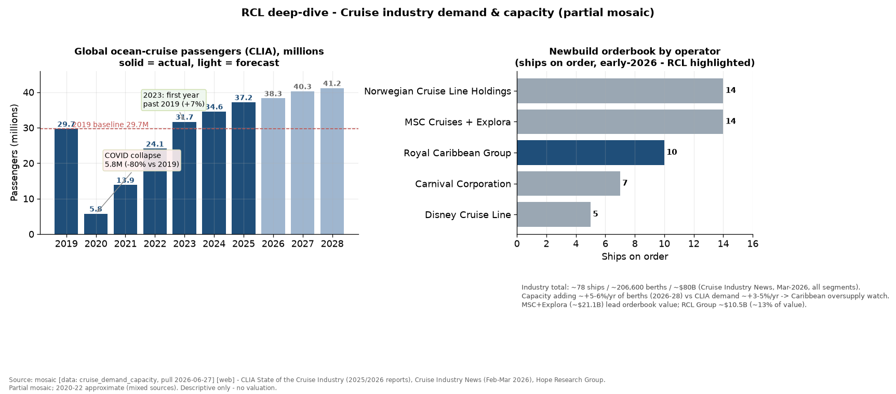
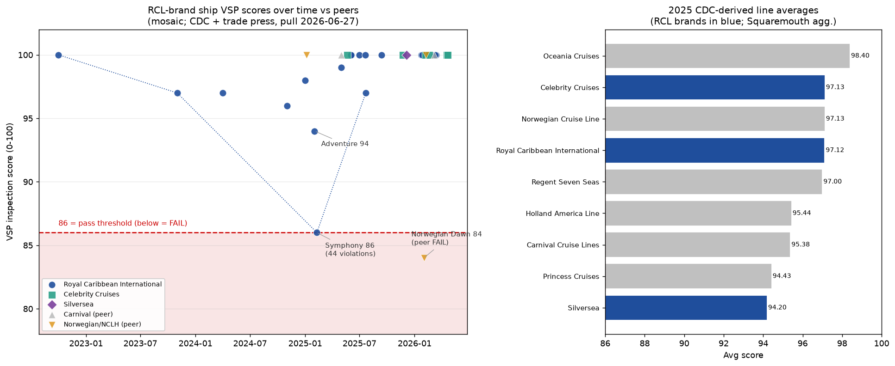

Royal Caribbean Cruises Ltd. (RCL) — Deep-Dive Dossier
Run date: 2026-06-26 · Fiscal year end: December 31 · Reporting entity: Royal Caribbean Group (single reportable segment, "Global Cruise Brands")
Capitalization & consensus multiples (descriptive market context, no valuation judgment)
| Item | Value |
|---|---|
| Share price (2026-06-26) | $318.13 |
| Diluted shares (Q1-2026) | 268.2M |
| Market capitalization | $85,321M |
| Net debt | $21,210M |
| Enterprise value (mkt cap + net debt) | $106,531M |
| Multiple (consensus, BEst) | FY2026E | FY2027E | FY2028E |
|---|---|---|---|
| Forward P/E (adjusted EPS) | 18.3x | 15.9x | 14.1x |
| EV / EBIT | 19.5x | 17.5x | 15.8x |
| EV / EBITDA | 13.9x | 12.6x | 11.5x |
| Dividend yield (annualized) | ~1.9% | n/a | n/a |
Basis: Bloomberg/BEst consensus, pull 2026-06-26 (live terminal). EV = market cap plus net debt (Bloomberg's packaged enterprise-value field returned null; minority/preferred are immaterial for this entity). Forward P/E on consensus adjusted EPS ($17.34 / $19.95 / $22.64); EV/EBIT and EV/EBITDA on consensus operating income and EBITDA. Dividend yield on the $1.50/quarter declared February 2026 ($6.00 annualized); no clean forward dividend consensus.
Run basis & scope
| Field | Value |
|---|---|
| Run date | 2026-06-26 |
| Fiscal basis | Calendar year (December FYE); FY and calendar returns are identical |
| Reporting entity | Royal Caribbean Group — one reportable segment |
| Latest annual data | FY2025 10-K (filed 2026-02-11) |
| Latest interim data | Q1-2026 10-Q (filed 2026-04-30) |
| Market data cut | Bloomberg, 2026-06-26 |
| Scope note | This dossier presents no valuation judgment, no price target, and no buy/sell view. Multiples appear only as descriptive market history (Section 15) and market context (Section 16). |
Global caveats
| Issue | Reading note |
|---|---|
| Single reportable segment | RCL aggregates Royal Caribbean International, Celebrity, and Silversea into one segment and discloses no per-brand revenue or profit. Every brand-level claim in this dossier is positional, not financial; the moat and yield path cannot be split by brand. |
| COVID discontinuity | Operations were suspended in 2020 and resumed gradually through H1-2022. FY2020–FY2022 are not comparable to FY2019 or to each other; clean comparisons run 2016–2019 and 2023–2025, bridged 2019→2025. |
| Net Yield definition change (2022) | "Net Yields" meant Net Revenues per APCD before 2022 and Adjusted Gross Margin per APCD from 2022. The two series are not chainable; the level jump from $208.88 (2019) to $236.38 (2023) is mostly definitional. Only growth rates within each regime are comparable. |
| Source gaps | No local sell-side coverage and no third-vendor (Daloopa) cross-check existed; the bear case in Sections 8 and 18 is built from filings and transcript Q&A. The forward model assumes the near-zero Section 883 tax status is permanent. That risk is quantifiable but is not included in the forecast (flagged at the top of Sections 17 and 18). |
50%-owned Partner Brands (TUI Cruises, Hapag-Lloyd) are equity-method: their $414M of FY2025 earnings sit outside consolidated revenue, capacity, and KPIs and flow only through one equity-income line, which biases reported ROIC down. The most recent quarter (Q1-2026) confirms and slightly accelerates the FY2025 trend on every operating line, realized Net Yield included (up 3.6%, against 3.8% for FY2025). What decelerated is the forward guide: FY2026 Net Yield is guided to +1.5% to +2.5%. That inflection is treated as a finding throughout.
1. Business description, model & unit economics
Royal Caribbean sells cruise vacations to individual households through three wholly-owned brands — Royal Caribbean International (contemporary and family), Celebrity Cruises (premium), and Silversea (ultra-luxury and expedition) — plus a new Celebrity River Cruises line launched in 2025. It reports them as one segment because they share one economic model: build ships, fill berths, and sell onboard. There is no customer concentration to speak of: revenue comes from roughly 9.4 million discrete passengers a year, no country other than the United States exceeds 10% of ticket revenue, and guest sourcing is about 74% United States (FY2025 10-K, Note 3).▪ The risk is aggregate consumer-discretionary demand, not a key account.
What drives price. RCL runs dynamic yield management against a forward book that opens two-plus years ahead. A guest pays a deposit to confirm and the balance before sailing, so there are no multi-year contracts and no RPO disclosure (performance obligations are under one year). The pricing metric management runs on is Net Yield, defined as Adjusted Gross Margin per Available Passenger Cruise Day (APCD). In FY2025 Net Yield was $273.51, up 3.8% as-reported and 3.7% constant-currency over 2024 (FY2025 10-K). The clean cross-COVID pricing comparison is the post-2022 series: $236.38 (2023) → $263.59 (2024) → $273.51 (2025), and on the definition-consistent total-revenue-per-APCD basis, $264.30 (2019) → $336.33 (2025), up 27.3%. That is real post-COVID pricing power on a leisure product.
What drives volume. Capacity is APCD — double-occupancy berth-days — which grows only as fast as ships are delivered: 53,325,212 in FY2025, up 5.5%, guided up 6.7% in 2026 (FY2025 10-K; Q1-2026 call). On top of capacity sits occupancy, which routinely exceeds 100% — 109.7% in FY2025 — because the third and fourth passengers in a cabin are not in the double-occupancy denominator, so every point above 100% is near-pure incremental revenue on a ship that is already sailing▪. RCL carried 9,446,010 passengers over 58,518,751 passenger cruise days, an average cruise of 6.2 nights.
The demand-driver tree — revenue reduces to capacity (APCD) × occupancy × per-passenger-day yield, so "cruise demand" and "record yields" are proxies; the ultimate exposures are a contracted newbuild schedule (a supply lever RCL controls), an occupancy line already pinned at its ~110% ceiling, and North-America-concentrated discretionary leisure spend that sets per-day price. Durable growth reduces to capacity delivery plus a low-single-digit structural yield; the occupancy refill and the 2022–2024 fare catch-up that dominated the recent record cannot repeat. (Capacity and occupancy multiply the whole revenue base; ticket and onboard are the additive 70/30 split of that base.)
| Demand driver | Share of revenue | Ultimate exposure (decomposed) | Realized 3-yr contribution | Robustness |
|---|---|---|---|---|
| Capacity — newbuild berth-days (APCD) | ×100% (scales all revenue) | Contracted deliveries at ~3 European yards, limited by shipyard slots, ~+5–7%/yr on a 2–3yr lead, ~80% export-credit financed. RCL sets the order book | ~37% of FY22→FY25 revenue gain; ~63% in the clean FY24→FY25 year | Structural, durable, low near-term amplitude (orderbook locked); capital-intensive ($11.3B on order, net debt ~$20.5B) |
| Occupancy — load factor above 100% | ×100% (scales all revenue) | The 3rd/4th berth above the double-occupancy denominator — whether ships sail full; at 109.7%, a practical ceiling | ~36% of FY22→FY25 gain, but ~all of it the 85.1%→109.7% COVID refill; ~13% in FY24→FY25 (last leg); ~0 forward | One-off recovery, exhausted; no forward contribution |
| Ticket net yield — per-passenger-day fare | 69.8% | NA-concentrated discretionary household leisure spend (74% US sourcing, 64% NA revenue) priced against land vacations, cleared through a 2yr dynamic book, plus owned-destination / newest-ship premium | ~25% of FY22→FY25 gain, but the 2022–24 +13.5%/+11.5% Net-Yield surge was catch-up; pure per-day price was only ~+2% in 2025 | Cyclical, high amplitude (−80% revenue in 2020); decelerating into 2026 Caribbean oversupply (+1.5–2.5% guide) |
| Onboard net yield — per-passenger-day spend | 30.2% | In-trip discretionary wallet (gaming, beverage, dining, shore-ex, spa, internet), much concession-share and pre-cruise-booked — per-head spend intensity + digital monetization + owned-destination shore capture | only ~3% of FY22→FY25 gain; onboard per-head price ~flat (+6.5% over the window, ~2%/yr) — onboard revenue growth is a more-passengers story, not a per-head pricing story | Structural but modest on price; secular digital support; shares the demand cyclicality through volume |
Stripping the one-off post-COVID normalization, well over half of the FY2022→FY2025 revenue gain was occupancy refill (~36%) plus the 2022–2024 fare catch-up embedded in the price contribution; the durable remainder is capacity (~37%, contracted) plus a low-single-digit structural yield — and with occupancy now at the ceiling, forward growth reduces to capacity (~5%/yr contracted) plus structural yield (~2–4%/yr), the two levers the base-case model already carries (Section 17).
What drives cost. Reported revenue of $17,935M splits 69.8% passenger ticket ($12,515M) and 30.2% onboard and other ($5,419M), a mix stable across the decade.▪ Onboard — gaming, beverages, specialty dining, shore excursions, spa, internet — is the higher-incremental-margin half, because much of it runs through concessionaires who bear the cost while RCL books a revenue share: onboard expense is only about 5.5% of revenue against ~30% onboard revenue. The unit-economics table below is the FY2025 income statement divided by APCD, so it reconciles to the cent by construction.
Unit economics, per APCD (FY2025)
| Line | $/APCD | $M | Provenance |
|---|---|---|---|
| Passenger ticket revenue | 234.69 | 12,515 | 10-K income statement |
| Onboard & other revenue | 101.62 | 5,419 | 10-K income statement |
| Total revenue (Gross Yield) | 336.32 | 17,935 | 10-K income statement |
| less Commissions, transport & other (variable) | (44.43) | (2,369) | 10-K income statement |
| less Onboard & other expense (variable) | (18.40) | (981) | 10-K income statement |
| = Net Yield (Adjusted Gross Margin/APCD) | 273.51 | 14,585 | 10-K yield reconciliation |
| less Payroll & related (mostly fixed) | (25.62) | (1,366) | 10-K income statement |
| less Food (variable with passengers) | (19.11) | (1,019) | 10-K income statement |
| less Fuel (semi-fixed per sailing) | (21.49) | (1,146) | 10-K income statement |
| less Other operating (mostly fixed) | (41.30) | (2,202) | 10-K income statement |
| less Marketing, selling & admin (mostly fixed) | (41.69) | (2,223) | 10-K income statement |
| less Depreciation & amortization (fixed) | (32.22) | (1,718) | 10-K income statement |
| = Operating income/APCD | 92.08 | 4,910 | 10-K (27.4% margin) |
The six cruise-operating-cost lines (commissions, onboard, payroll, food, fuel, other) sum to $170.35/APCD, which times 53,325,212 APCD equals $9,083M, the reported total cruise operating expense exactly. The marginal-berth logic follows directly: the only truly variable costs to fill the next berth on a sailing ship are commissions and transport (~$44/APCD), onboard cost of goods (~$18), and incremental food (~$19). Crew, fuel to move the ship, depreciation, and shoreside overhead are committed once the ship leaves port. So the contribution from a marginal capacity-day is roughly Net Yield less incremental food, about $254. That is why Net Yield, not gross revenue, is the metric management guides, and why modest yield growth converts to large operating-income growth.
Operating leverage, measured not asserted. Roughly 24% of revenue is variable cost, about 48% is fixed cost per ship-day, and 27.4% is operating income. The realized incremental operating margin (change in operating income over change in revenue) was 47.5% from 2023 to 2024 and 55.4% from 2024 to 2025, and 40.5% through the cycle from 2019 to 2025 — all far above the ~27% average margin, because most of the cost base is already committed.▪ Net Cruise Cost excluding fuel per APCD has been held roughly flat ($119.30 in 2023 → $127.40 in 2024 → $127.57 in 2025, up 0.1% in 2025), so the mechanism is modest yield growth on a held-flat unit-cost base.
Most of the 2025 EPS gain was not pricing. The 2024-to-2025 pretax improvement of $1,432M (a 48.7% jump) was only about 56% operating: operating income rose $804M, but net interest expense dropped $598M — about 42% of the total gain▪ — as RCL repaid COVID-era debt and refinanced into investment grade, and equity income rose $154M. Net Yield itself grew only 3.8%. Adjusted EPS grew about 32.5% ($11.80 to $15.64), helped further by $1.2B of buybacks. The deleveraging tailwind is finite: once leverage normalizes at investment grade, EPS growth must come from yield, capacity, and buybacks, not from interest falling further. This is the single most important qualifier on the operating-leverage story, and it is quantified in Section 17.
The capital-light equity stream. Partner Brands (50% TUI Cruises, which itself owns Hapag-Lloyd) contributed $414M of equity income in FY2025, up 59% from $260M, with no consolidated revenue or APCD attached — high-return earnings the headline KPI framing omits.▪ It is ~9.5% of pretax income and the fastest-growing profit line, and because the JV capital sits in RCL's invested-capital base while the profit is netted out of operating income, reported ROIC understates the true return on all capital.
Capital and working-capital intensity. The business is a fleet of ships: property and equipment net of $35,696M is 86% of total assets. Capex was $5,229M (29.2% of revenue) in FY2025 and is guided to ~$5B for 2026; it swings with the newbuild delivery schedule rather than a smooth maintenance line. Ships on order aggregate $11.3B at end-2025, of which only $1.0B was deposited; about 80% of Global-Brand newbuild cost is covered by export-credit financing with sovereign guarantees. The binding constraint is shipyard slots — only a handful of yards can build large cruise ships — which caps industry supply growth to mid-single-digits and is the structural reason capacity cannot flood the market (Section 5).▪ Working capital is structurally negative: customer deposits were $5,739M at year-end 2025, about 32% of revenue, an interest-free liability that funds operations and partly funds newbuild deposits.▪ Operating cash flow of $6,465M was 36% of revenue and 1.32x operating income, because depreciation is non-cash and deposits grow. Company-defined ROIC (adjusted operating income over five-quarter-average invested capital) was 18.0% in FY2025, above any plausible cost of capital.▪
Recent quarter. Q1-2026 confirms the run-rate: revenue $4,452M (up 11.3%) on capacity up 8.3% and Net Yield up 3.6% ($268.23 vs $258.83), with Net Cruise Cost excluding fuel per APCD up only 0.6%.▪ Nothing inflected except forward yield guidance, which management trimmed on China redeployment and softer Mediterranean demand (Section 6).
Investor decks reinforce two additive points here: the owned-destination portfolio expands from 3 to 8 by 2028 [deck: Q3 2025 Earnings Call 2025-10-28, slide 11], and Celebrity River Cruises scales to 20 ships by 2031 [deck: Q4 2025 Earnings Call 2026-01-29, slide 17] — both new growth vectors beyond ocean cruising.
External operational-quality check (mosaic, pulled 2026-06-27). CDC Vessel Sanitation Program data show the operating discipline self-correcting under stress: Symphony of the Seas scored 86 — the lowest passing mark — on 2025-02-09 with 44 violations (including an unreported kids'-club GI-illness episode and bare-handed food handling), after which RCL filed a ~57-item corrective action plan and the ship re-scored 97 by 2025-07-22. One ship scored 86 and re-scored 97 within six months; every other captured RCL ship scored 97–100, so the lapse was isolated (peer comparison and line averages in Section 3). [data: cdc_vessel_sanitation, pull 2026-06-27] [web]; mosaic, partial coverage.
2. Key technologies & technical differentiators
RCL markets itself as an innovation leader, but on inspection it is a brand, scale, and owned-content business that uses technology competently rather than a technology company.▪ The ships are built by the same handful of European yards that build for every rival, so the hardware is shared infrastructure, not RCL intellectual property. Ranked by how hard each "technology" is to replicate:
Owned private destinations are the most durable differentiator, and they are real estate rather than technology. RCL owns or leases exclusive land destinations used as ports-of-call on its own itineraries: Perfect Day at CocoCay (an owned Bahamas island, with the Hideaway Beach adults-only expansion opened January 2024), Labadee (leased Haiti peninsula), and the new Royal Beach Club collection (Paradise Island opened December 2025; Santorini in 2026; Cozumel and others to come). A second island, Perfect Day Mexico at the acquired Port of Costa Maya, opens in 2027. The portfolio expands from 3 to 8 by 2028. Economically, this is itinerary content RCL owns, so it captures the shore-side spend that would otherwise leak to a third-party port, at very high incremental margin, and it lifts ticket pricing on the sailings that visit. Hideaway Beach and the beach clubs are "accretive to margin" and in CocoCay's case have no APCD (no capacity cost), so they raise yield and margin while optically raising the per-APCD cost metric by ~300 basis points (Q3/Q4 2023 calls). The differentiation evidence is quantified: more than half of Caribbean sailings visit a private destination, over 70% of Royal Caribbean brand Caribbean guests do so today rising to 90% by 2028, and CocoCay is the brand's highest-rated destination on Net Promoter Score (Q4 2024 / Q4 2025 calls)▪. It is hard to replicate because a private island within a short sail of high-volume Florida and Texas homeports is scarce, capital-intensive, and permit-gated. Competitors are imitating it (Carnival's Celebration Key opened 2025, NCLH expanding Great Stirrup Cay), so it is contestable, but RCL has the largest, most-developed portfolio and a multi-year head start.
Scale economics of the largest ships — durable while RCL can fund and fill the biggest hulls. RCL operates standardized ship classes, each designed once and amortized across multiple hulls. The flagship is Icon-class — the largest cruise ships in the world at roughly 5,600 berths, LNG-powered, built by Meyer Turku in Finland (Icon of the Seas 2024, Star of the Seas 2025, Legend of the Seas 2026, two more by 2028, with Icon 6 and 7 ordered in 2026). Larger ships spread fixed cost across more revenue-generating berths, so cost per APCD falls as ship size rises, and management states newer vessels generate higher yield premiums (FY2025 10-K). New hardware drove yield gains evenly split between new and existing ships in 2025 (Q2 2025 call). But the design and brand are RCL's; the construction is not proprietary. Chantiers de l'Atlantique builds MSC's LNG World-class mega-ships at the same Saint-Nazaire yard where it builds RCL's Oasis and new Discovery-class ships, and Fincantieri states one in every three cruise passengers sails on a ship its yards built▪ (seatrade-cruise.com / marinelink.com, accessed 2026-06-26) [web]. So the edge is the willingness and ability to order and fill the biggest hulls, not a manufacturing secret, and a well-funded rival is doing the same thing at the same yard.
The digital, loyalty, and data stack is a real advantage that rivals can copy. A connected stack of app, pre-cruise e-commerce, revenue-management engine, AI analytics, cross-brand loyalty (28M+ members, Status Match since 2024, Royal One co-branded card in 2025), and fleet-wide Starlink connectivity. The quantified results: digital booking penetration more than doubled versus 2019, app monthly active users are about 5x 2019 with over 90% adoption, pre-cruise booking-engine penetration is over 70% with more than 5 items per booking, more than half of onboard revenue is now booked before boarding, and pre-cruise purchasers spend about 2.5x more (Q1 2026 / Q2 2025 calls)▪. Loyalty members are about 40% of bookings and spend ~25% more per trip. Management is unusually candid that the tools are not the moat: "What differentiates us in this space is not access to tools, but the combination of a deep understanding of our guests, a fully integrated digital ecosystem, the ability to deploy these capabilities across a multi-day end-to-end vacation experience" (Q1 2026 call). The defensible part is the first-party data at scale and the captive multi-day surface, not a unique algorithm; Carnival and NCLH run their own apps and loyalty programs, so the gap is the scale of data, contestable in principle.▪
LNG propulsion and Advanced Emissions Purification — not a differentiator. Scrubbers (on over 70% of the fleet) and LNG dual-fuel engines are off-the-shelf compliance technology from engine makers, installed by the shared shipyards. RCL is a follower here: Carnival ran the world's first LNG cruise ship, AIDAnova, in December 2018▪ ("the first cruise ship in the world that can operate completely using LNG"), while RCL's first LNG ship, Icon, arrived in 2024, about six years later (en.wikipedia.org / prnewswire.com, accessed 2026-06-26) [web]. The value of LNG and scrubbers is cost avoidance and deployment flexibility, not premium pricing. The Destination Net Zero roadmap (net-zero-capable ship by 2035, net zero by 2050) rests on fuels management itself says "are not available today." The threat runs the other way — as a rising regulatory cost (Section 6): EU Emissions Trading System coverage of EU-area emissions phases from 40% in 2024 to 70% in 2025 to 100% in 2026, with FuelEU Maritime and a possible IMO fuel levy (decision around 2028) layered on.
Forward technology dependence is modest in the near term — the digital base is already realized and ships are delivering on schedule — but the long-dated decarbonization cost is an open industry problem no operator has solved.
3. Competitive advantages & moat assessment
Section caveat: RCL's reported ROIC is biased downward because the highly profitable 50%-owned Partner Brands' capital sits in the invested-capital base while their $414M of FY2025 equity income is excluded from operating income. The true return on all capital is higher than the 16.1% computed below; the magnitude is not separately derivable from disclosure.
RCL's advantage is real and, on the financial evidence, widening — but it sits inside a cyclical, capital-intensive, capacity-contestable industry, so the advantage is strong but open to erosion: a well-funded rival can order the same ships at the same yards and build its own islands.▪ The financial evidence is unambiguous: RCL earns the highest margins and returns of the three public cruise operators, grows revenue fastest, is the least levered, and every one of those gaps has widened since 2019.
- FY2025 operating margin 27.4% versus Carnival 16.8% and NCLH 15.9% — a premium that grew from about 3 points over Carnival and 1 point over NCLH in 2019 to about 11 points over each in 2025.▪
- FY2025 ROIC about 16.1% (computed here), up every post-COVID year (9.1% → 11.2% → 15.1% → 16.1% across 2019/2023/2024/2025), versus Carnival 12.1% and NCLH 9.2%.▪
- Revenue compounded 8.6% a year since 2019, the fastest of the three (NCLH 7.2%, Carnival 4.2%), while also being the most profitable.▪
- Net debt to EBITDA 2.9x versus Carnival 3.4x and NCLH 5.6x.
The advantage is open to erosion because cruise demand is discretionary and cyclical, and the 2020–2022 shutdown drove all three to deep operating losses and RCL's ROIC negative, so the business does not throw off excess returns through a cycle without interruption. The advantage also requires continuous heavy reinvestment to defend: capex ran 20–30% of revenue even at peak profitability.▪ And capacity is portable: a rival can order ships and redeploy existing tonnage into RCL's most profitable region. The live test is the 2026 Caribbean capacity surge, into which RCL guided constant-currency Net Yield growth of only +1.5% to +2.5%, decelerating from +3.7% in 2025 — pricing power that is real but visibly moderating at the margin even as the absolute margin premium widens.▪
Management claims: an integrated "vacation ecosystem" of brands, ships, owned destinations, and loyalty that compounds, run on a "proven formula" of moderate capacity growth, moderate yield growth, and disciplined cost control [deck: Q2 2025 Earnings Call 2025-07-29, slide 5]. The most-emphasized differentiator is the private-destination build-out; the most-defended position is "we own the Caribbean."
External sources: corroborate the product and destination edge but flag the contestability. Trade coverage notes Caribbean capacity is "set to jump sharply, driven largely by competitors redeploying ships," and that RCL's higher capacity growth "raises the bar for maintaining pricing discipline if demand softens," while also confirming the supply barrier that protects all incumbents — shipyard output is effectively capped at ~14–16 large deliveries a year with 24–42 month lead times, so the orderbook is "essentially locked" (cruiseindustrynews.com / seatrade-cruise.com, accessed 2026-06-26) [web].
Ground-up view: entry barriers are high and industry-wide. A modern large ship costs roughly $1–2.5B and takes 2–3.5 years to build at one of a few yards, so a credible entrant cannot obtain slots for years; export-credit financing covering ~80% of newbuild cost is available to established operators; and the major operators are foreign-flagged and largely exempt from US federal income tax under Section 883, lifting NOPAT close to EBIT for all three. These protections let the big operators earn at or above cost of capital in normal demand, but they are shared, not RCL-specific. What is RCL-specific and survives the test is owned destinations (near-irreplaceable, high-margin), scale and unit cost (the lowest Net Cruise Cost per APCD, visible in the margin premium), and a deeper loyalty and digital ecosystem (modest switching costs).▪ Management is right that the edge exists and is widening; the trade press is right that it is cyclical and copyable; the owned destinations and unit-cost gap explain why RCL earns the most, while the industry structure explains why all three can earn at all.
Returns tested three ways
ROIC here is operating income times (1 − cash tax rate) over total debt plus equity less cash, year-end balances; cash taxes are near zero under Section 883, so NOPAT approximates EBIT. Cost of capital is estimated at roughly 8–9% (equity beta ~1.8–2.0). This is a business-quality test, not a stock valuation.
Standalone (RCL through time):
| Metric | FY2019 | FY2023 | FY2024 | FY2025 |
|---|---|---|---|---|
| Gross margin % | 44.6 | 44.1 | 47.5 | 49.4 |
| Operating margin % | 19.0 | 20.7 | 24.9 | 27.4 |
| EBITDA margin % | 32.3 | 32.5 | 37.0 | 39.2 |
| ROIC % | 9.1 | 11.2 | 15.1 | 16.1 |
| Net debt / EBITDA x | 3.0 | 4.6 | 3.3 | 2.9 |
RCL durably earns above an ~8–9% cost of capital and the level is rising, driven by margin expansion on flat unit cost and rapid deleveraging. The caveat to "durable" is the 2020–2022 hole (operating losses of $4.6B, $3.9B, $0.8B; ROIC negative), the cyclicality a capital-light business does not have. Free-cash-flow margin is thin and lumpy (4–12% post-COVID; −2% to +26% across the decade) because newbuild capex consumes most of the strong operating cash flow.
Versus peers (latest FY, computed from each filer's own statements):
| Company | Rev CAGR '19-'25 | Gross mgn | Op margin | EBITDA mgn | Capex int. | ROIC | Net debt/EBITDA |
|---|---|---|---|---|---|---|---|
| RCL | 8.6% | 49.4% (FY25) | 27.4% | 39.2% | 29.2% | 16.1% | 2.9x |
| CCL | 4.2% | 37.5% (FY24)* | 16.8% | 27.3% | 13.6% | 12.1% | 3.4x |
| NCLH | 7.2% | 42.6% (FY25) | 15.9% | 26.9% | 33.2% | 9.2% | 5.6x |
* Carnival's FY2025 cruise-cost line is not yet XBRL-tagged; FY2024 gross margin shown. R&D intensity is zero across the group — the cruise model has no R&D line; differentiation is fleet, brand, destinations, and scale. Most-recent-quarter check (apples-to-apples across misaligned fiscal years): RCL Q1-2026 operating margin 26.1% on revenue up 11.3%, Carnival FY2026-Q2 12.8% on up 5.3%, NCLH Q1-2026 10.0% on up 9.5%. RCL's seasonally weakest quarter still beats both peers' off-peak quarters by 13–16 points, and no peer's recent quarter reverses the ranking in its latest-FY row; the ranking holds in the current run-rate.
Over time: every returns and margin gap is widening. The operating-margin premium over Carnival went from +3.3 points (2019) to +10.6 points (2025); over NCLH from +0.8 points to +11.5 points. The ROIC premium over Carnival went from +0.9 point to +4.0 points; over NCLH from +0.7 point to +6.9 points (the 2019 premiums are stated on RCL's prior ROIC basis, not recomputed against the current FY2019 ROIC of 9.1%). RCL is the only one of the three whose ROIC rose every post-COVID year; NCLH's 9.2% is roughly back to its 2019 level and barely clears cost of capital, and NCLH posted negative free-cash-flow margin in FY2023 and FY2025, so it cannot fund its growth capex from operations.▪ The one place the trend is not in RCL's favor is forward pricing momentum: FY2026 Net Yield guidance of +1.5% to +2.5% is a deceleration from +3.7%, explicitly attributed to Caribbean oversupply plus Mediterranean and Mexico geopolitics. The absolute margin premium is widening; the rate of yield gain is slowing. That is the leading indicator to watch.
Each claimed advantage against its evidence test
| Claimed advantage | Test it must pass | Evidence | Assessment |
|---|---|---|---|
| Scale / unit cost | unit-cost or margin gap widening with volume | 10-point operating-margin premium over both peers, widening since 2019; Net Cruise Cost ex-fuel flat (−0.1% cc) on growing capacity | Real; the strongest financially-visible edge |
| Owned private destinations | incremental yield and margin not available to rivals | drive captured shore and onboard spend; 3→8 destinations by 2028; cited as why Caribbean yields hold | Real, most durable, hardest to replicate |
| Brand / fleet quality | yield premium per berth | newest classes carry premiums; FY2025 Net Yield +3.7% cc | Real but needs constant reinvestment |
| Loyalty / switching | retention and repeat pricing | repeat ~40% of guests (was ~33%); repeat spend +25%; cross-brand Status Match | Real but modest (low absolute switching cost) |
| Regulation / financing | barrier rivals cannot match | shipyard-slot scarcity and export-credit financing | Industry moat, shared across the big three |
| Tax structure | structural return lift | Section 883 keeps cash tax ~2% | Industry-level, real, and a political risk |
An advantage with no financial evidence behind it is not counted: the technology and AI capability is real but shows no isolable margin or share effect beyond what the unit-cost and yield numbers already capture, so it is supporting evidence, not a standalone moat.
External brand-quality check (mosaic, pulled 2026-06-27). CDC Vessel Sanitation Program scores corroborate the brand/fleet-quality claim. RCL's mainstream brands average ~97/100 in 2025 (Royal Caribbean International 97.12, Celebrity 97.13 on a third-party computation of CDC data), ahead of the Carnival family (Carnival Cruise Line 95.38, Princess 94.43, Holland America 95.44) and level with Norwegian's core (97.13); no RCL-brand ship failed (scored below the 86 pass threshold) in the captured set, whereas Norwegian Dawn failed at 84. The soft spot is Silversea at ~94.2, near the bottom of all lines and notable for an ultra-luxury brand. Sanitation scores show consistent operational quality at the volume brands. That supports the brand-quality claim; it does not establish it on its own. [data: cdc_vessel_sanitation, pull 2026-06-27] [web]; mosaic and upward-biased — the harvestable CDC subset over-represents perfect-100 ships and the line averages are a third-party aggregation, so "no failures" means none found, not a verified clean sweep. (chart in Appendix C)
4. Competitive landscape & market sizing
RCL is the global number two cruise operator by capacity and revenue (behind Carnival) and the clear profit leader of the mass-ocean group: its FY2025 Adjusted EBITDA of $7,025M slightly exceeds Carnival's (~$6.97B) on roughly 55–57% of Carnival's berths.▪ Carnival leads on raw scale (94 ships, 272,380 lower berths, 13.6M guests, $26.6B revenue — about 1.8x RCL's capacity) but is deliberately not growing it (capacity-days up 2.8% a year, only 7 ships on order through 2033).▪ RCL is growing capacity, revenue, and passengers faster than Carnival while running the highest occupancy in the group. RCL is widening its lead in premium-contemporary ocean through the largest ships and owned destinations. It is not the per-day pricing leader, and its berth lead over privately-held MSC is narrowing.
Market structure. It is an oligopoly: the four largest operators — Carnival, Royal Caribbean Group, NCLH, and MSC — represented approximately 80% of cruise-industry capacity at end-2025 (Carnival FY2025 10-K, citing Cruise Industry News).▪ Derived passenger-share HHI is roughly 2,150–2,250 [estimate: sum of squared FY2025 passenger shares], the high end of moderately concentrated. No single player sets price; pricing discipline is a function of capacity discipline, and RCL's own 10-K warns that deploying capacity into a region beyond its demand "may negatively affect our pricing and profitability." So the structure is concentrated globally but contestable at the regional-capacity margin. The profit pool is increasingly internalized via owned destinations (RCL's CocoCay and Royal Beach Club; Carnival's Celebration Key).
Market sizing, built from disclosed industry data. Ocean cruise demand was about 37M global guests in 2025 (35M in 2024, 32M in 2023), a roughly 7.5% two-year CAGR, against a weighted-average ~725,000 berths marketed across ~430 ships (FY2025 10-K, citing CLIA and G.P. Wild).▪ North American cruise penetration reached 5.96% of population in 2025 (up from 3.36% in 2015), Europe 1.73%, and Asia/Pacific only 0.09%.▪ The "$2 trillion+ vacation market" management cites is the entire leisure-travel wallet — hotels, resorts, theme parks — not an addressable cruise market; the decision-relevant market is the ~37M-guest, roughly $60–70B-revenue ocean cruise market in which the big four already hold ~80% of capacity.▪ Treat the $2T figure as a runway narrative, not addressable share (Section 6).
Peer scale & operating-KPI comparison (global cruise operators, FY2025)
Capacity-days is the like-for-like scale unit (double-occupancy berth-days): RCL calls it APCD, Carnival ALBDs, NCLH Capacity Days, Viking Capacity PCDs.
| Operator (FYE) | Lower berths (~) | Capacity-days | Passengers | Occupancy | Net Yield/day | Revenue | Berth share | Orderbook |
|---|---|---|---|---|---|---|---|---|
| RCL (Dec'25) | ~155,400 GB | 53.3M | 9,446,010 | 109.7% | $273.51 | $17,935M | ~20-23% | 6 large ships + 2 Discovery (MOU) + river; $11.3B |
| Carnival (Nov'25) | 272,380 | 96.5M | 13,600,000 | ~105% | n/d (per-diem) | $26,600M | ~36% | only 7 ships thru 2033 |
| NCLH (Dec'25) | ~67,000 [est] |
24.4M | 2,997,829 | 103.5% | $301.10 | $9,828M | ~9% | ~15 ships thru 2036 |
| MSC (private) | ~92,000 [est] |
n/d | ~3,700,000 [est] |
n/d | n/d | ~$5B [est] |
~12% [est] |
+10 ships thru 2033 → 27 by 2030 |
| Viking (Dec'25) | small/ship (river ~190) | 7.71M | 791,582 | 95.4% | $583 | $6,501M | n/m (river) | 2 ocean + 10 river in '26 |
| Disney (in Disney Experiences) | ~30,000 [est] |
n/d | ~2M [est] |
n/d | n/d (premium family) | n/d | ~4% [est] |
7 new ships thru 2031 |
| Virgin Voyages (private) | ~11,000 | n/d | ~500,000 [est] |
n/d | n/d | ~$0.7–1B [est] |
~1.4% [est] |
none firm beyond 4 ships |
Growth track record (3-year where available): RCL revenue +13.6%/yr (2023→25), capacity-days +6.6%, passengers +11.2%, Net Yield $236.38→$273.51 (+7.6%/yr). Carnival revenue +11.0%, capacity +2.8%. NCLH revenue +7.2% (+3.7% in '25), capacity +4.2%. Viking revenue +21.9% in '25, capacity +11.9%, the fastest revenue grower but in a different river-led, adults-only model. The Adjusted EBITDA contextual point belongs to Section 3, but the scale-efficiency gap is striking: RCL generates Adjusted EBITDA of $131.75 per APCD versus Carnival's roughly $72 per ALBD▪ [estimate: ~$6.97B Adj EBITDA ÷ 96.5M ALBDs] — about 1.8x more EBITDA per berth-day.
Who is gaining and losing. Carnival's scale lead is static (capacity up 2.8%/yr, debt paydown over capacity). RCL is taking premium-ocean share organically (faster growth on every operating line, highest occupancy, the heaviest near-term large-ship orderbook of the big three). MSC is the structural share-gainer: private, ~10% of global passengers, going from 23 to 27 ships by 2030 with 10 ships on order through 2033▪ — its own orderbook adds roughly 47,500 berths, about 52% fleet-capacity growth on its ~92,000-berth base and about a third of RCL's entire wholly-owned ~155,400-berth fleet (the broader ">100,000 berths" sometimes cited is the combined Royal Caribbean + MSC + Carnival three-company orderbook, not MSC alone) (cruiseindustrynews.com, accessed 2026-06-26) [web]. Disney is the fastest percentage grower (6→13 ships by 2031) from a small premium-family base. Viking's ocean push threatens premium-ocean peers (Celebrity, Princess, Oceania), not Royal Caribbean's mass-market core. The live structural risk is in-region capacity dumping — any operator over-deploying into the Caribbean, Alaska, or Mediterranean compresses pricing for all. The 10-K names this as a recurring sensitivity.
Two share figures should not be double-counted: RCL's passenger share (~25.5%) exceeds its berth share (~20–23%) because Royal Caribbean runs short, high-turn Caribbean itineraries at over 100% occupancy, so the two bases are not directly comparable across operators with different cruise lengths. On revenue, MSC's "third largest" billing holds on passengers and berths but not on revenue, where NCLH ($9.8B) and Viking ($6.5B) exceed MSC's estimated ~$5B. The durable-advantage interpretation of this structure lives in Section 3.
External capacity check (mosaic, pulled 2026-06-27). A bottom-up read of the global orderbook independently supports the in-region oversupply watch. Industry-wide newbuilds total roughly 78 ships / ~206,600 berths / ~$80B (Cruise Industry News, early 2026) on an all-segment, all-delivery-year basis. That is a wider scope than the 47 ships / ~113,000 berths through 2029 that the 10-K-based count in Sections 8 and 18 uses, so the two totals are not comparable and only the 10-K basis supports the shrinking-orderbook comparison there. On either basis berths are adding ~5–6% a year through 2028 against CLIA passenger demand of ~3–5%, so supply, not aggregate demand, is the binding pricing variable, exactly the Caribbean-deployment risk the 10-K names. On the orderbook RCL is not the largest adder: MSC+Explora lead on value (~$21.1B, ~26% of the industry orderbook) and tie NCLH on ship count (14 each, full-scope), while RCL Group is ~$10.5B (~13%) across ~10 ships (the table's 6 large + 2 Discovery-class MOU + river). This quantifies and reinforces the point above that MSC is the structural share-gainer and RCL's berth lead over MSC is narrowing. [data: cruise_demand_capacity, pull 2026-06-27] [web]; mosaic — orderbook totals are scope-divergent across sources (member-ocean vs all-segment) and operator counts vary by timing (chart in Appendix C).
5. Value chain & profit pools
RCL is unusually vertically integrated for a service company: it owns the ships (the largest cost in the chain, amortized over 25–35 years), increasingly owns the itinerary content (private destinations), co-owns the scarce drydock-repair capacity (33% of Grand Bahama Shipyard), and is pushing distribution in-house.▪ The two layers it does not own — shipyards upstream and the end consumer downstream — are where the binding constraint and the pricing tension live.
Where the revenue dollar goes (FY2025)
| Layer / claimant | $M | % of revenue | What it pays for |
|---|---|---|---|
| Travel advisors + air + variable port + card fees | 2,369 | 13.2% | agent commissions, transport, head-tax port costs, card fees |
| Onboard & other expense | 981 | 5.5% | onboard cost of goods (concessionaire COGS sits off RCL's books) |
| Crew / shipboard labor | 1,366 | 7.6% | shipboard crew (87% under collective bargaining) |
| Food / provisions | 1,019 | 5.7% | food for guests and crew |
| Marine fuel | 1,146 | 6.4% | HFO/MGO/LNG plus delivery and swap impact |
| Other operating | 2,202 | 12.3% | fixed port costs, repairs, vessel insurance, entertainment |
| Marketing, selling & admin | 2,223 | 12.4% | shoreside payroll, advertising, IT |
| Shipyards (amortized) = D&A | 1,718 | 9.6% | depreciation of ships; proxy for the upstream capital dollar |
| Operating income to RCL | 4,910 | 27.4% | |
| Lenders / export-credit agencies (net interest) | (992) | (5.5%) | debt service, 4.69% weighted-average coupon |
| Partner Brands (equity income) | +414 | +2.3% | RCL's 50% of the German JV's profit |
| Net income to RCL shareholders | ~4,290 | 23.8% |
This stack reconciles to reported figures because RCL discloses the cost lines directly; no triangulation is needed at the consolidated level. The one undisclosed piece is the off-books concessionaire layer: RCL records concession revenue net (only its share), so a guest's $100 spa or casino purchase shows up as perhaps $20–40 of RCL commission while the concessionaire keeps the rest and bears the cost. The gross third-party wallet and the direct-versus-concession split are not disclosed [estimate: undisclosed] — flagged as an open question, not sized, because no independent angle constrains it. Within the ticket dollar, port costs charged to guests on a gross basis and largely passed through to port authorities grew from $896M (2023) to $1.3B (2025), tracking passenger volume.
The binding constraint — shipyard slots (confirmed). RCL's own risk factor states there are "a limited number of shipyards with the capability and capacity to build, repair, maintain and/or upgrade our ships... limited substitutes," and both peers say the same thing — Carnival names the same two yards, NCLH warns of shipyard consolidation and a "lack of viable dry-dock facilities in the Western Hemisphere." Big-ship newbuilds concentrate in three European yards (Meyer Turku, Chantiers de l'Atlantique, Fincantieri); river ships go to TeamCo. Deployment decisions are set 18–32 months out, but newbuild slots run far longer — RCL's order book stretches to 2032. Purchase commitments quantify the lock-up: ship obligations of $9,093M across 2026–2028, against an aggregate ships-on-order cost of $11.3B (only $1.0B deposited), 64.1% Euro-exposed. RCL defends against the constraint by ordering in classes (series production), back-integrating into repair capacity, and co-investing in ports — none of which relieves newbuild slot scarcity, which remains the chain's hard bottleneck and a source of yard pricing power. At March 2026 the ships-on-order cost had risen to $16.2B after RCL signed two Discovery-class ships and a fifth Icon, consuming more of the scarce slot supply.
Customer-side economics — does a $2B ship pay back? A ~5,600-berth Icon at ~350 operating days is roughly 1.96M APCD. At a 1.15–1.25x new-hardware yield premium on the fleet's $336/APCD, ship revenue is roughly $760–825M, generating ~$295–320M EBITDA on ~$2.1B cost — an EBITDA yield of ~14–15% and a simple payback of about 7 years [estimate: APCD × gross-yield method, off the $11.3B aggregate]. After depreciation, the pre-financing return is ~11–12%, consistent with the fleet's 18% ROIC once the ~80% export-credit leverage at 3.0–4.3% is applied to the equity slice. At current yields newbuilds clear the cost of capital comfortably. The math depends on sustained yield premiums and 109.7% occupancy; if either normalizes toward the fleet average, newbuild returns compress toward 9–11%, still above cost of capital, but the 18% headline ROIC would decline.
Bargaining power, by interface. RCL is capturing more of the dollar at every interface except the shipyards. Its operating margin rose from 19.0% of revenue (2019) to 27.4% (2025).▪ The travel-advisor slice declined from 15.1% to 13.2% as direct/digital grew. Fuel declined from the 8.3% 2023 spike to 6.0% (Q1-2026), helped by 60% 2026 hedging and LNG/scrubber coverage. Net interest dropped from $1,590M (2024) to $992M (2025) as RCL deleveraged to investment grade. The one adverse interface is shipyards: slot scarcity, consolidation, and 64% Euro exposure give the yards pricing leverage RCL cannot easily counter, and it is the price-taker there.
Circular financing makes the chain self-funding. Two flows dominate. Customer deposits ($5,739M at end-2025, $6,548M by March 2026) are interest-free customer financing that produces the industry's structural negative working capital — the same model Carnival ($8.9B working-capital deficit) and NCLH ($3.2B advance ticket sales) run.▪ And sovereign export-credit financing funds ~80% of every newbuild: each loan is 95–100% guaranteed by the export credit agency of the build country (Finnvera in Finland, Bpifrance in France, SACE in Italy) at coupons of 3.0–4.3%, so Finland, France, and Italy subsidize the financing to keep their yards full.▪ This is an industry-wide flow, not an RCL edge, but it is the structural reason the chain can keep ordering $2B ships. RCL also part-owns the Western-Hemisphere repair bottleneck (Grand Bahama Shipyard, jointly with Carnival) and funds new floating drydock capacity through a JV.
6. Secular & industry trends
RCL sells a discretionary leisure experience whose end-market is the household choosing how to spend leisure time, against land-based vacations rather than only other cruise lines. Demand has a secular leg and a deep cyclical one, and the penetration data separate them.
Penetration — the runway is narrower and more North-America-dependent than the headline implies. Cruise guests as a share of regional population:
| Region | 2015 | 2019 | 2025 |
|---|---|---|---|
| North America | 3.36% | 3.89% | 5.96% |
| Europe | 1.25% | 1.41% | 1.73% |
| Asia/Pacific | 0.08% | 0.20% | 0.09% |
North America (62% of global cruise guests) deepened, up 2.07 points in six years, a 53% relative increase. But Asia/Pacific penetration more than halved from its 2019 level on "lack of cruise supply and itineraries in China," so the emerging-market leg the pre-COVID thesis leaned on has gone backwards.▪ The "$2 trillion, tiny sliver" framing implies near-unlimited runway; the data complicate it because the richest source market is already penetrating fast and the cheap-runway leg has reversed.
Share math. Over 2019→2025, industry weighted-average berths grew 25.2% (579,000 → 725,000) while RCL's Global-Brand berths grew 31.8% (117,920 → 155,400), lifting RCL's Global-Brand berth share from 20.4% to 21.4%. On guests, RCL grew 44.1% (6.55M → 9.45M) against the industry's 23.3% (30M → 37M), lifting guest share from 21.8% to 25.5%.▪ So RCL grew faster than its end-market on both capacity and guests, consistent with the moat evidence — but the larger guest-share gain is amplified by occupancy rising toward 109.7%, an effect with a ceiling that cannot repeat.
Cyclical versus secular. The 2022–2024 yield surge was a one-time level reset, not a permanently steeper slope. On the consistent post-2022 definition Net Yield jumped 41.4% in 2023 ($167.15 to $236.38), rose 11.5% in 2024, then decelerated to +3.8% (2025) and a +1.5% to +2.5% guide (2026).▪ Management's own "durable" range is +2% to +4% a year, below the pre-COVID pace (Net Revenues per APCD grew ~5.9%/yr 2016–2019).▪ The catch-up tailwind is spent, the base is higher, and the forward slope is flatter than it was. The 2026 softness is cyclical and event-driven, not secular: a Middle East fuel spike (~$0.62/share, ~60% hedged), short-term Mediterranean and West-Coast-Mexico demand moderation, and China itinerary redeployment (30 basis points of Q1-2026 yield).
Technology levers that can lift the slope. The private-destination platform (3 → 8 destinations by 2028) is the most company-specific yield lever, called "nicely accretive to yield growth." The digital and AI stack lengthens the monetization window and supports onboard revenue (~30% of total) growing faster than ticket. The loyalty ecosystem is pulling repeat-guest share from ~33% to ~40%. New Icon-class and Discovery-class hardware command yield premiums; Legend of the Seas is booking at prices higher than Icon and Star (Q1 2026 call).
Regulatory levers that can lower it. The decarbonization cost wedge builds toward 2030–2035: the IMO GHG strategy (−20% absolute emissions by 2030 versus 2008, a possible global fuel levy with a decision expected around 2028), EU ETS phasing to 100% of EU emissions in 2026 with UK ETS from July 2026, and FuelEU Maritime with shore-power mandates by 2030–2035. RCL states these are not material to 2025–2026 at current allowance prices but "could individually and collectively have a material adverse effect" when fully implemented. No agent dollar-bounded this trajectory; the model's fuel line is exogenous with no compliance-cost path (flagged in Section 20).
External demand & search-interest check (mosaic, pulled 2026-06-27). Independent industry data corroborate the catch-up-is-spent read. CLIA ocean-cruise volume traced a V — 29.7M guests (2019) → 5.8M (2020, −80%) → past 2019 by 2023 (31.7M) → a record 37.2M in 2025 (+25% vs 2019) — and the forward CLIA path normalizes to mid-single digits (38.3M in 2026 at +3%, 40.3M in 2027, 41.2M in 2028), so the post-COVID surge is largely behind the industry rather than ahead of it. Search interest, a booking-demand proxy, confirms the recovery but shows relative brand momentum shifting away from RCL: U.S. "cruise" searches rose 23.7% (2022→2025), yet Royal Caribbean rose only 11.7%, still the highest absolute interest, against MSC +157%, Disney +33%, and Norwegian +26%, with Carnival down 16%. Both cut the same way as the internal read: the demand level reset is real but the slope is normalizing, with the search data adding the new caveat that newer-brand momentum (MSC, Disney) is outpacing RCL's. [data: cruise_demand_capacity, pull 2026-06-27] [web]; mosaic and partial — the 2020–2022 trough mixes sources, 2019 baselines differ by methodology, and Google Trends is indexed, not absolute. (chart in Appendix C)
The earliest signs that the secular story is breaking would be, in rough order of lead time: booked load factor and forward average per diems sliding below historical ranges; a below-prior-year Wave season; Net Yield guidance turning negative outside event-driven regions; Caribbean pricing (57% of 2026 deployment) turning negative; a shrinking new-to-cruise mix; onboard pre-cruise penetration rolling over; and the next 10-Ks' penetration prints, especially whether Asia/Pacific recovers or stays impaired.
7. Critical points
-
The margin and returns lead over both public peers is real, widening, and the single best moat evidence. FY2025 operating margin 27.4% versus Carnival 16.8% and NCLH 15.9% — a premium that grew from ~3 points to ~11 points over Carnival since 2019, with ROIC at 16.1% (and understated because Partner-Brand profit is excluded while its capital is counted). RCL is the only one of the three whose ROIC rose every post-COVID year. The qualifier is cyclicality, not the level (Section 3).
-
About 42% of the 2024→2025 pretax gain came from interest falling, not operations. Net interest dropped $598M of the $1,432M pretax improvement as RCL repaid COVID debt and refinanced to investment grade; operating income rose $804M and Net Yield only 3.8%. The deleveraging tailwind is finite — once leverage normalizes, EPS growth must come from yield, capacity, and buybacks. This is the most important qualifier on the operating-leverage narrative (Sections 1, 17).
-
Owned private destinations are the most durable, least-contestable piece of the moat, and the Caribbean-overcapacity defense. Over 70% of Royal Caribbean Caribbean guests visit a private destination today, rising to 90% by 2028; CocoCay adds no APCD, so it lifts yield and margin without capacity cost. But there is no disclosed per-destination ROI or yield-uplift number, so the thesis rests on projects clearing their cost of capital without a supporting figure (Sections 2, 20).
-
Forward yield growth is decelerating into a Caribbean capacity surge. 2026 Net Yield guidance was cut to +1.5% to +2.5% (from +1.5% to +3.5%), below management's own +2% to +4% "moderate" band, while the Caribbean is 57% of 2026 deployment and the whole industry is adding berths there. The absolute margin premium is widening even as the rate of yield gain slows (Sections 3, 4, 8).
-
The capital structure has de-risked through EBITDA recovery, not debt paydown. Net debt to EBITDA declined from above 8x (2020–2022) to 3.0x, equity rebuilt from a $2.9B trough to $10.2B, and RCL regained investment grade in 2025 — but gross debt is essentially unchanged at $21.9B, so a demand shock would re-stress the identical debt load (Section 12).
-
COVID dilution consumed roughly 60% of the per-share recovery. Share count went from 209.9M (2019) to a 283.0M peak (2023), settling at 274.0M (2025), up 31% versus 2019. Revenue is up 64% but revenue per share only 25%; margin expansion drove EPS to +74% despite the larger base (Section 10).
-
Perfecta's "20% EPS CAGR" headline overstates the live difficulty. FY2025 already delivered +32.5% on the 2024 base, so the remaining 2025→2027 requirement to reach the implied ~$20.4 is only ~14.2%/yr — barely above consensus (~13.1%) and below RCL's pre-COVID expansion-phase pace. RCL has achieved two of the three completed multi-year programs (Trifecta 18 months early); the miss was 20/20 Vision, ended by COVID (Sections 14, 17). Cross-reference Section 8.
-
The fastest-growing profit stream is invisible in the headline framing. Partner-Brand equity income of $414M (up 59%) is ~9.5% of pretax profit and has no consolidated revenue or capacity attached, biasing ROIC down by an unquantified amount. No standalone JV economics were built (Section 20).
8. Variant perceptions
The bear case below is self-constructed: there is no local sell-side coverage of RCL and no recoverable forward-EPS dispersion, so these tensions rest on filings, transcript Q&A, and a few stale web analyst notes.
The stock rallied as estimates were cut. Between 2026-04-04 and 2026-06-26 the share price rose 16.3% ($273.59 → $318.13) while the consensus CY2026 EPS estimate it sits on was cut 3.4% ($17.95 → $17.34), so the entire move was multiple re-rating (15.2x → 18.3x forward) (Bloomberg snapshots). Consensus is paying up for the Perfecta compounding narrative, not for near-term numbers, which are moving the other way. This is the cleanest external-expectations tension.
RCL is widely framed as the number-two challenger to Carnival, but on profit generated it is effectively the leader. RCL's FY2025 Adjusted EBITDA ($7,025M) slightly exceeds Carnival's (~$6.97B) on about 55% of Carnival's capacity-days (53.3M versus 96.5M), roughly 1.8x more EBITDA per berth-day [estimate]. Carnival leads only on raw size.
RCL is described as having the strongest pricing power in cruising, but it is not the per-day pricing leader. On the industry's own pricing metric, RCL's Net Yield ($273.51) trails NCLH ($301.10, +10%) and Viking ($583, +113%). RCL's edge is occupancy (109.7%, the highest), scale, owned-destination content, and cost, not per-day price.▪ Premium and luxury peers price higher per day; RCL out-earns them through volume and margin.
The recovery is told as a near-permanent re-rating, but most of it was an earnings rebound with a modest multiple lift. Adjusted EPS went from −$7.50 (2022) to $15.64 (2025) while the share price rose 1,070% from the July-2022 low ($31.28) to the August-2025 high ($365.84). The move was largely earnings-driven, but it included a modest re-rating: the trailing adjusted P/E at end-2025 was about 17.8x, above the pre-COVID 11–16x range, not inside it (Section 15).
"Structural oversupply" in the Caribbean is the consensus worry, but the industry orderbook actually shrank. The current orderbook is 47 ships and ~113,000 berths through 2029, versus 78 ships and ~183,000 berths through 2027 in the FY2021 10-K — roughly 38% fewer berths on order.▪ The oversupply fear is materially smaller than during COVID, and RCL's owned destinations differentiate the Caribbean product against the added capacity. The counter-counter is that 57% of 2026 deployment is Caribbean and the guide was nonetheless cut.
The bull narrative implies durable ~20% EPS growth, but the base rate cuts the other way. Consensus 2025–2028 (~13.1%/yr) already models a fade toward RCL's pre-COVID non-recovery growth (~12.6%/yr in 2017–2019), because ~42% of the 2024→2025 gain came from interest falling, which is not repeatable. The operating-leverage framing overstates the durable rate (Sections 14, 17).
RCL sits at the top of its class on margin and ROIC, which cuts both ways. Being best-in-class is moat evidence, but it also means the margin and ROIC have the most room to fade and the least cross-sectional precedent for going higher. Consensus's further +180 basis points of margin expansion to 29.2% by 2028 is the part of the package with the weakest base-rate support.
9. History & inflection points
| Date | Event | Why it mattered |
|---|---|---|
| 1968 / 1985 | Founded as a partnership; parent incorporated in Liberia | Origin of the foreign-flag, Section 883 tax structure |
| 1993 / 1997 / 2006 | NYSE IPO; Celebrity acquired; Pullmantur acquired | Built the multi-brand ladder |
| 2008–2009 | Global financial crisis | Liquidity-first playbook: financed Oasis, moved out maturities, suspended dividend |
| 2014 | Double-Double program launched; added to S&P 500 | Installed the per-share/ROIC discipline still recited in 2026 |
| 2017 | Double-Double achieved (adj EPS $7.53) | First named program delivered |
| 2018 | Silversea 66.7% acquired ($1.02B); 20/20 Vision launched | Up-market into ultra-luxury/expedition |
| 2019 (May) | Perfect Day at CocoCay opened; record year (rev $10.95B) | Origin of the owned-destination strategy |
| 2020-03-13 | COVID: global suspension; ~$9.3B raised; capex cut $3B | Existential discontinuity; debt and share count reset |
| 2021-03 | Azamara sold to Sycamore ($201M) | Portfolio pruning |
| 2022 (Jan) | Jason Liberty becomes CEO (Fain → Exec Chairman) | Planned internal CFO→CEO handoff at the trough |
| 2022 (Nov) | Trifecta program announced | Recovery scorecard tied to LTI |
| 2024 (Jan) | Icon of the Seas enters service; Trifecta hit 18 months early | Structural margin step-up confirmed |
| 2025 | Celebrity River Cruises launched; Perfecta launched; record results | New growth vector; successor program |
| 2026 (Q1) | Record Wave; first post-COVID guidance cut | Yield deceleration on geopolitics/fuel |
Five key inflections:
- Double-Double discipline (2014→2017): adjusted EPS more than doubled to $7.53; operating income roughly doubled to $1,744M; ROIC rose to 9.6%, its pre-COVID high. This installed the "moderate capacity, moderate yield, strong cost control" formula and the named-program governance device. RCL manages to public, time-boxed targets and tends to beat them when the cycle cooperates.
- Up-market and owned-destination shift (2018→2019): Silversea and Perfect Day at CocoCay moved RCL into ultra-luxury and high-margin owned content; revenue rose from $8.78B to a then-record $10.95B. This is the origin of today's "vacation ecosystem."
- COVID, the existential discontinuity (2020→2021): revenue collapsed to $2.21B then $1.53B; cumulative 2020–2022 net losses were about $13.2B; gross debt roughly doubled to a ~$23.4B peak at end-2022; the share count rose ~30%. The 20/20 Vision target was abandoned. The 2009 playbook repeated and amplified, and permanently reset the leverage and share-count base on which all later records are measured.
- CEO succession (Jan 2022): the finance-trained Liberty took over at the recovery trough; the deleveraging-to-investment-grade priority and the Trifecta/Perfecta programs are his, with continuity of the formula across the handover.
- Structural margin step-up (2022→2025): RCL emerged more profitable than pre-COVID — Adjusted EBITDA margin ~33% (2019) → 39.2% (2025); net income per APCD ~$45 → $80; 2025 net income ~2.3x the 2019 record.▪ Trifecta was hit 18 months early. Drivers: private destinations, pre-cruise/onboard digital spend, new-ship premiums, and a permanent cost reset.
What the current narrative omits or reframes. 20/20 Vision is essentially absent from post-2022 communications — it was tracking ahead until COVID erased the 2020 finish, and management pivoted straight to Trifecta with no retrospective. The "record EPS" framing downplays that the 2025-versus-2019 jump is measured against a ~30%-larger share base and ~2x-higher gross debt. Pullmantur (ceased 2020) and Azamara are largely dropped from the portfolio story.
10. Management, incentives & capital allocation
Leadership. Richard Fain was Chairman and CEO from 1988 to January 2022, then Chairman until November 2025; Jason Liberty (joined 2005, CFO 2013–2021) has been CEO since January 2022 and Chairman and CEO since November 2025. The executive bench is stable and internally developed — Naftali Holtz (CFO 2022), Michael Bayley (Royal Caribbean brand), Harri Kulovaara (Maritime), all long-tenured. The combined Chairman and CEO role since November 2025 is a concentration of power, partly offset by a Lead Independent Director and ~97% say-on-pay support. Three of the longest-serving directors are the former Chairman and CEO (Fain, a director for 44 years) and two anchor-family representatives (Ofer, 30 years; Wilhelmsen, 22 years), so a large share of board experience is owner-anchored rather than independent-by-tenure — strong owner alignment, weaker independence.
Compensation. CEO pay is ~79% long-term equity. The annual bonus is 65% company financial (Adjusted EPS for corporate) plus a 35% KPI composite (Net Yield, Net Cruise Cost ex-fuel, guest satisfaction, safety, engagement, carbon). The 2025–2027 PSUs measure Adjusted EPS (45%), ROIC (45%), and carbon intensity (10%). The plan leans on per-share and capacity-normalized metrics (Adjusted EPS, ROIC, Adjusted EBITDA per APCD), so it does not obviously reward dilutive scale. The 2023–2025 PSU paid out at 298% of target, near the 300% maximum. Every financial metric maxed at 200% in all three years, and the design adds a further kicker of up to 100 points on top of that 200% base when any metric reaches its maximum, which is how the payout clears 200%. FY2025 Adjusted EPS of $15.64 was 90% above the PSU target ($8.23) and 54% above the maximum ($10.15). The bonus EPS target was set at the midpoint of management's own January guidance ($14.50 for 2025). The payout magnitude reflects targets set in November 2022 amid recovery uncertainty that the recovery vastly exceeded — the design measured against a beatable bar, not a high hurdle cleared, even though the underlying TSR was roughly 2.5x the peer index. CEO compensation grew from $10.8M (2022) to $24.0M (2025); compensation-actually-paid swung from $462K (FY2020) to $76.6M (FY2024), pay-for-performance on the upside, with a sharp downside in 2020. CEO security perquisites rose to $1.65M (FY2025) from $244K, following a threat study. Insider ownership is ~6.4% as a group but ~16.4M of that is Wilhelmsen alone; ex-Wilhelmsen the group owns under 0.4%. The CEO holds 169,595 shares, above the 6x-salary guideline; hedging and pledging are prohibited.
Candor. The transcript record (2007–2026) shows a consistent willingness to name disappointments rather than only externals — Mediterranean yields (2011), the S&P downgrade (2008), the half-year profit miss (2009), and a measured COVID stance (2020). The multi-year-target framework is consistent and largely delivered. Setting public, beatable-but-stretch targets and over-delivering is a credibility positive and, simultaneously, the source of the outsized incentive payouts.
Ten-year uses of cash (FY2016–FY2025, $M)
| Year | OCF | Capex | FCF | M&A | Buyback | Dividends | Net debt Δ | Diluted sh (M) |
|---|---|---|---|---|---|---|---|---|
| 2016 | 2,517 | 2,494 | 23 | 0 | 300 | 346 | +973 | 216.3 |
| 2017 | 2,875 | 564 | 2,311 | 0 | 225 | 437 | −1,968 | 215.7 |
| 2018 | 3,479 | 3,660 | −181 | 916 | 575 | 527 | +1,627 | 211.6 |
| 2019 | 3,716 | 3,025 | 691 | 0 | 100 | 603 | −534 | 209.9 |
| 2020 | −3,732 | 1,965 | −5,697 | 0 | 0 | 326 | +9,702 | 214.3 |
| 2021 | −1,878 | 2,230 | −4,108 | 0 | 0 | 0 | +2,171 | 252.0 |
| 2022 | 481 | 2,710 | −2,229 | 0 | 0 | 0 | +2,058 | 255.0 |
| 2023 | 4,477 | 3,897 | 580 | 0 | 0 | 0 | −1,925 | 283.0 |
| 2024 | 5,265 | 3,268 | 1,997 | 0 | 0 | 107 | −1,333 | 279.0 |
| 2025 | 6,465 | 5,229 | 1,236 | 0 | 1,159 | 824 | +1,137 | 274.0 |
| Total | 23,665 | 29,042 | −5,377 | 916 | 2,359 | 3,170 | +11,908 | — |
The decade FCF was negative, and the deficit is the COVID years. Cumulative free cash flow (operating cash less capex) was −$5.4B on decade totals of $23.7B operating cash against $29.0B of capex. Excluding 2020–2022, operating cash flow of $28.8B exceeded capex of $22.1B, so ex-COVID free cash flow was positive $6.7B.▪ This is partly by design — ~80% of Global-Brand newbuild cost is funded by matched export-credit debt — so negative post-capex FCF in build years is not distress, but the consequence is that equity holders receive no free cash during build-heavy years and shareholder returns are funded by the cyclical upswing, not by structural free cash flow.
Buybacks are pro-cyclical, not opportunistic. The two biggest cash-buyback years (2018, $575M; 2025, $1,159M) both came with the stock near record highs. Through the 2020 crash (low ~$19) and the 2021–2023 recovery ($31–131) RCL bought back nothing, while it was a forced equity issuer at the bottom (~$9.3B raised in 2020, including converts at $72.11 and $82.50 conversion prices).▪ The better-timed share actions were the convertible-note exchanges (about 5.1M shares recaptured at ~$154 in Q3 2024). Net, RCL has bought high and issued low; "opportunistic" describes intent, not realized timing.
Per-share creation versus enterprise growth. Measured from the 2019 peak, revenue is up 64% but revenue per share only 25% — dilution consumed roughly 60% of the per-share top-line recovery; margin expansion (operating margin ~19% to ~27%) drove EPS to +74%.▪ Returns improved too: ROIC moved from ~9% pre-COVID to 16.1% in 2025 (18.0% on the company's own definition), deploying a larger capital base at a higher return. The stated framework (balance sheet first, invest for growth, competitive dividend plus opportunistic buybacks) is accurate about priority order; what it does not advertise is that shareholder returns are switched off entirely in a downturn.
11. M&A, divestitures & deal track record
Royal Caribbean grows organically: it adds capacity by ordering ships and building owned destinations, not by acquiring.▪ Over the last 10–15 years M&A has been a secondary lever, and the record is disciplined-leaning rather than either exceptional or value-destroying. There is one substantial acquisition (Silversea), strategically coherent — it filled the only gap in the brand ladder (ultra-luxury and expedition, the highest-yield end) — but bought at a full peak-cycle multiple with no margin of safety: within ~18 months RCL wrote off $576.2M of the $1,090.0M recorded goodwill (53%) plus a $30.8M trade-name charge in Q1-2020.▪ The write-down was COVID-timed, not a structural indictment, and the brand recovered: by November 2025 the Silversea trade-name fair value exceeded its carrying value by ~90%. The recurring pattern of failure is small regional-market bets via acquired or JV brands — Pullmantur, SkySea (China JV with Ctrip), CDF — each individually small but a poor record monetizing brands aimed at specific regional markets. The one successful JV is TUI Cruises (50/50, formed 2008), a meaningful equity-method contributor that expanded by acquiring Hapag-Lloyd in 2020. The dollar amounts of the failures are modest relative to RCL's scale and the one big deal recovered, so M&A has not destroyed material per-share value the way a serial roll-up can.
Deal ledger
| Date (closed) | Counterparty / asset | Direction | Price | EV/EBITDA | Goodwill recorded | Impairment to date | Outcome |
|---|---|---|---|---|---|---|---|
| Jul-2018 | Silversea 66.7% | Acquisition | $1,064M total | ~14x normalized (~11x w/ synergies) | $1,090M | $576M goodwill (Q1-2020) + $31M trade name | Recovered; brand wholly owned, trade-name FV +90% over carrying by Nov-2025 |
| Jul-2020 | Silversea remaining 33.3% | Acquisition | 5.2M RCL shares (~$260M [est]) |
n/a | $0 (equity txn) | n/a | Silversea now 100% owned |
| Mar-2021 | Azamara (to Sycamore) | Divestiture | $201M (3 ships + IP) | n/a | n/a | n/a | Clean exit at ~carrying value; immaterial gain |
| Jun-2020 | Hapag-Lloyd (into 50/50 TUIC JV) | Acquisition (JV) | ~€1.2B at JV; €75M each equity | n/a | n/a (equity method) | TUIC impairment 2021 (COVID) | Ongoing JV; locked ≥37.55% to May-2033 |
| 2015–16 | Pullmantur (51% to Springwater) | Divestiture / write-down | small net gain on 51% | n/a | acquired pre-archive | $298M intangibles (2015); $399M total | Value-destroyer; Spanish insolvency 2020, brand ceased |
| 2018 | SkySea (China JV w/ Ctrip) | Divestiture / write-off | wound down | n/a | n/a | $23.3M full write-off (2018) | Failed China JV; exposure eliminated |
| Jul-2025 | Port of Costa Maya, Mexico | Acquisition (asset) | $294M | n/a | $0 (asset) | none | Supports Perfect Day Mexico; too recent to grade |
On synergies, Silversea's stated target was at least $50M annualized cost synergies; the brand was integrated into shared services and the target was not separately re-disclosed, and the contingent earn-out (up to ~472,000 shares) was never paid because Silversea missed its 2019–2020 metrics during COVID. The amortization of Silversea's acquired intangibles still appears as an adjusted-EPS add-back through Q1-2026. The most recent quarters show no new business combinations — only the July-2025 Costa Maya asset purchase, consistent with the organic private-destination push.
12. Capitalization & balance sheet
Gross debt peaked at ~$23.4B at end-2022 with equity at a $2.9B trough; by end-2025 gross debt was $21.9B and equity rebuilt to $10.2B. Net debt to Adjusted EBITDA declined from above 8x (2020–2022) to 3.0x (FY2025) and ~2.9x (TTM through Q1-2026), within sight of the ~2.8x pre-COVID level.▪ RCL regained investment grade in 2025 (BBB− S&P / Baa3 Moody's, per the FY2025 10-K).
Debt stack at December 31, 2025
| Layer | Wtd-avg rate | Maturities | $M |
|---|---|---|---|
| Unsecured senior notes (fixed) | 5.56% | 2026–2036 | 11,197 |
| Unsecured term loans (fixed, export-credit) | 3.32% | 2026–2037 | 8,024 |
| Total fixed-rate debt | 19,221 | ||
| USD unsecured term loans (variable) | 5.36% | 2026–2037 | 2,328 |
| Euro unsecured term loans (variable) | 3.46% | 2028–2042 | 194 |
| Total variable-rate debt | 2,522 | ||
| Finance lease liabilities | 159 | ||
| Total debt (gross) | 21,902 | ||
| Less: unamortized issuance costs | (557) | ||
| Total debt, net | 21,345 |
Weighted-average cost of debt = 4.69% at December 31, 2025 (principal-weighted, net of interest-rate swaps; 4.76% a year earlier). The cash interest rate does not differ materially because only ~7% of debt (~$1.6B of the $21,902M gross, after swaps against the $2,522M of variable-rate debt above) is floating, so a hypothetical +1 percentage point in rates would add roughly $16M to 2026 interest. The cheap layer is the export-credit term loans at 3.32% (sovereign-guaranteed); the market-priced layer is senior notes at 5.56%.
The stack is overwhelmingly unsecured (the COVID-era 8.25% secured notes were redeemed in 2024). The maturity wall is heaviest in 2026–2028 (~$9.0B over three years; 2026 $3.2B, 2027 $2.6B, 2028 $3.2B), with 2028 the year to watch because it coincides with a $3.2B revolver tranche maturing in October. But Q1-2026 already cut the current portion from $3,180M to $1,448M, and liquidity is $6.9B ($0.5B cash plus a $6.4B undrawn revolver). Critically, RCL is refinancing down, not up: it called 11.625%, 9.25%, 8.25%, and 7.25% COVID-era notes in 2024 and reissued at 5.375%–6.25%, saving roughly 3–5 percentage points on ~$3.7B refinanced, which is why the weighted-average rate keeps falling even as base rates stayed high.▪ The convertibles are fully retired (last $106M matured August 2025).
Leases and other. Operating-lease liability is $690M (mostly berthing arrangements); finance leases are $159M (primarily the Miami HQ master lease). No material pension or OPEB obligation (crews are largely contract labor). The Euro FX exposure is the live one: 64.1% of the $11.3B ships-on-order cost is Euro-denominated (up from 43.4%), partially hedged with ~$1.2B of forwards.
SBC and dilution. SBC expense is modest ($175M in 2025, ~1% of revenue). Share count is now falling: shares issued grew from 236.5M (2019) to 303.1M (2025) through the COVID raises and convert conversions, but the $1.0B 2025 buyback (completed November) plus a new $2.0B program ($1.8B remaining at year-end) turned shares outstanding down (270.4M December 2025 → 268.2M March 2026). Dividends ramped from reinstatement in 2024 to a $1.50/quarter declaration in February 2026 (2025 dividends paid $824M versus $107M in 2024).
Structural risks, ranked. (1) The 2026–2028 maturity cluster (~$9B), moderate and well-managed given IG status and the undrawn revolver. (2) The newbuild funding gap — $11.3B order book, ~80% export-credit-financed for Global-Brand ships but the 20-ship river commitment is not covered. (3) Euro FX on construction. (4) Customer-deposit reversal in a demand shock — $5.7–6.5B of interest-free funding becomes a refund liability (the 2020 mechanism); low probability, high impact, and not sized (Section 20). (5) Floating-rate exposure (~7% of debt, ~$1.6B; +$16M per point). (6) Covenant proximity — in compliance, with the hard COVID covenants (minimum equity) eliminated in 2024.
13. Financial history & summary
13.1 Annual summary
Income statement ($M unless noted; FY2026E–FY2028E are Bloomberg consensus, as-of 2026-06-26):
| Metric | 2016 | 2017 | 2018 | 2019 | 2020 | 2021 | 2022 | 2023 | 2024 | 2025 | 2026E | 2027E | 2028E |
|---|---|---|---|---|---|---|---|---|---|---|---|---|---|
| Total revenue | 8,496 | 8,778 | 9,494 | 10,951 | 2,209 | 1,532 | 8,841 | 13,900 | 16,484 | 17,935 | 19,612 | 21,068 | 22,983 |
| Gross profit (pre-D&A) | 3,480 | 3,881 | 4,232 | 4,888 | (556) | (1,126) | 2,227 | 6,125 | 7,832 | 8,852 | — | — | — |
| D&A | 895 | 951 | 1,034 | 1,246 | 1,279 | 1,293 | 1,407 | 1,455 | 1,600 | 1,718 | — | — | — |
| GAAP operating income | 1,477 | 1,744 | 1,895 | 2,083 | (4,602) | (3,870) | (764) | 2,878 | 4,106 | 4,910 | 5,474 | 6,084 | 6,722 |
| Stock-based comp | — | — | — | 76 | — | — | — | 126 | 267 | 175 | — | — | — |
| Impairment / restructuring | — | — | — | — | 576 | — | — | — | — | 8 | — | — | — |
| EBITDA | 2,460 | 2,852 | 3,129 | 3,539 | (3,710) | (2,740) | 583 | 4,524 | 6,097 | 7,036 | 7,680 | 8,474 | 9,264 |
| Adjusted EBITDA | 2,460 | 2,852 | 3,129 | 3,618 | (1,828) | (2,602) | 712 | 4,544 | 5,971 | 7,025 | 7,680 | 8,474 | 9,264 |
| Equity income (Partner Brands) | 128 | 156 | 211 | 231 | (213) | (135) | 57 | 200 | 260 | 414 | — | — | — |
| Net interest expense | 282 | 276 | 284 | 409 | 844 | 1,292 | 1,364 | 1,402 | 1,590 | 992 | — | — | — |
| Net income | 1,283 | 1,625 | 1,811 | 1,879 | (5,797) | (5,260) | (2,156) | 1,697 | 2,877 | 4,268 | 4,666 | 5,287 | 5,920 |
| Diluted shares (M) | 216 | 216 | 212 | 210 | 214 | 252 | 255 | 283 | 279 | 274 | — | — | — |
| Diluted EPS GAAP ($) | 5.93 | 7.53 | 8.56 | 8.95 | (27.05) | (20.89) | (8.45) | 6.31 | 10.94 | 15.61 | 17.33 | 19.94 | 22.61 |
| Adjusted diluted EPS ($) | 6.08 | 7.53 | 8.86 | 9.54 | (18.31) | (19.19) | (7.50) | 6.77 | 11.80 | 15.64 | 17.34 | 19.95 | 22.64 |
Growth (%):
| Metric | 2016 | 2017 | 2018 | 2019 | 2020 | 2021 | 2022 | 2023 | 2024 | 2025 | 2026E | 2027E | 2028E |
|---|---|---|---|---|---|---|---|---|---|---|---|---|---|
| Revenue growth | — | 3% | 8% | 15% | (80)% | (31)% | n/m | 57% | 19% | 9% | 9% | 7% | 9% |
| Operating income growth | — | 18% | 9% | 10% | n/m | n/m | n/m | n/m | 43% | 20% | 11% | 11% | 10% |
| Adjusted EBITDA growth | — | 16% | 10% | 16% | n/m | n/m | n/m | n/m | 31% | 18% | 9% | 10% | 9% |
| Diluted EPS growth | — | 27% | 14% | 5% | n/m | n/m | n/m | n/m | 73% | 43% | 11% | 15% | 13% |
Margins (%):
| Metric | 2016 | 2017 | 2018 | 2019 | 2020 | 2021 | 2022 | 2023 | 2024 | 2025 | 2026E | 2027E | 2028E |
|---|---|---|---|---|---|---|---|---|---|---|---|---|---|
| Gross margin | 41.0% | 44.2% | 44.6% | 44.6% | (25.2)% | (73.5)% | 25.2% | 44.1% | 47.5% | 49.4% | — | — | — |
| Operating margin | 17.4% | 19.9% | 20.0% | 19.0% | (208.3)% | (252.6)% | (8.6)% | 20.7% | 24.9% | 27.4% | 27.9% | 28.9% | 29.2% |
| Opex (gross−op) | 23.6% | 24.3% | 24.6% | 25.6% | 183.1% | 179.1% | 33.8% | 23.4% | 22.6% | 22.0% | — | — | — |
| Net margin | 15.1% | 18.5% | 19.1% | 17.2% | (262.4)% | (343.3)% | (24.4)% | 12.2% | 17.5% | 23.8% | 23.8% | 25.1% | 25.8% |
| EBITDA margin | 29.0% | 32.5% | 33.0% | 32.3% | n/m | n/m | 6.6% | 32.5% | 37.0% | 39.2% | 39.2% | 40.2% | 40.3% |
| FCF margin | 0.3% | 26.3% | (1.9)% | 6.3% | n/m | n/m | (25.2)% | 4.2% | 12.1% | 6.9% | — | — | — |
Cash flow, returns & balance sheet ($M unless noted):
| Metric | 2016 | 2017 | 2018 | 2019 | 2020 | 2021 | 2022 | 2023 | 2024 | 2025 | 2026E | 2027E | 2028E |
|---|---|---|---|---|---|---|---|---|---|---|---|---|---|
| Operating cash flow | 2,517 | 2,875 | 3,479 | 3,716 | (3,732) | (1,878) | 481 | 4,477 | 5,265 | 6,465 | — | — | — |
| Capex (gross) | 2,494 | 564 | 3,660 | 3,025 | 1,965 | 2,230 | 2,710 | 3,897 | 3,268 | 5,229 | 4,909 | 4,447 | 5,156 |
| Capex / revenue % | 29.4% | 6.4% | 38.6% | 27.6% | 89.0% | 145.6% | 30.7% | 28.0% | 19.8% | 29.2% | 25.0% | 21.1% | 22.4% |
| Capex / EBITDA % | 101% | 20% | 117% | 86% | n/m | n/m | n/m | 86% | 54% | 74% | 64% | 53% | 56% |
| Free cash flow | 23 | 2,311 | (181) | 691 | (5,697) | (4,108) | (2,229) | 580 | 1,997 | 1,236 | — | — | — |
| Share repurchases | 300 | 225 | 575 | 100 | 0 | 0 | 0 | 0 | 0 | 1,159 | — | — | — |
| Dividends paid | 346 | 437 | 527 | 603 | 326 | 0 | 0 | 0 | 107 | 824 | — | — | — |
| ROE | 14.1% | 15.2% | 16.3% | 15.4% | (66.2)% | (103.4)% | (75.1)% | 35.9% | 38.0% | 42.5% | — | — | — |
| ROIC | 8.0% | 9.6% | 8.8% | 9.1% | (18.9)% | (16.5)% | (3.1)% | 11.2% | 15.1% | 16.1% | — | — | — |
| Net debt | 9,254 | 7,419 | 10,490 | 10,791 | 15,645 | 18,388 | 21,456 | 20,955 | 19,688 | 20,520 | — | — | — |
| Net debt / EBITDA | 3.8x | 2.6x | 3.4x | 3.0x | n/m | n/m | 30.1x | 4.6x | 3.3x | 2.9x | — | — | — |
Notes: Adjusted EBITDA for 2016–2018 is computed (RCL began disclosing it in COVID-era filings); FY2019 onward is company-disclosed. Forward gross-margin and FCF cells are blank because Bloomberg publishes gross margin on a different basis (revenue net of variable cruise costs only, ~81%, not comparable to the historical 44–49% which nets all cruise operating expense) and publishes no clean operating-cash-flow or FCF consensus; operating and net margins forward are derived from consensus dollar lines. Bloomberg's diluted-EPS series differs from the 10-K for FY2023 ($6.61 vs $6.31) and FY2024 ($10.31 vs $10.94) because of convertible-note if-converted treatment; the 10-K figures are used here.
13.2 Last eight quarters ($M unless noted)
| Quarter | Revenue | Rev y/y | Rev q/q | Operating income | Op inc y/y | Net income | Diluted EPS (GAAP) | Adj EPS | Op margin % | OCF | Capex | FCF | Occupancy % |
|---|---|---|---|---|---|---|---|---|---|---|---|---|---|
| FY2024 Q2 | 4,110 | 16.7% | 10.2% | 1,099 | 42.5% | 854 | 3.11 | 3.21 | 26.7 | 1,573 | 2,140 | (567) | 108 |
| FY2024 Q3 | 4,886 | 17.5% | 18.9% | 1,634 | 29.2% | 1,111 | 4.21 | 5.20 | 33.4 | 897 | 334 | 563 | 111 |
| FY2024 Q4 | 3,760 | 12.9% | (23.0)% | 624 | 9.5% | 552 | 2.27 | 1.64 | 16.6 | 1,467 | 552 | 915 | n/d |
| FY2025 Q1 | 3,999 | 7.3% | 6.4% | 945 | 26.0% | 730 | 2.70 | 2.71 | 23.6 | 1,627 | 428 | 1,199 | 109 |
| FY2025 Q2 | 4,538 | 10.4% | 13.5% | 1,329 | 20.9% | 1,210 | 4.41 | 4.38 | 29.3 | 1,746 | 836 | 910 | 110 |
| FY2025 Q3 | 5,139 | 5.2% | 13.2% | 1,702 | 4.2% | 1,575 | 5.74 | 5.75 | 33.1 | 1,469 | 2,458 | (989) | 112 |
| FY2025 Q4 | 4,259 | 13.3% | (17.1)% | 933 | 49.5% | 754 | 2.76 | 2.80 | 21.9 | 1,623 | 1,507 | 116 | 108 |
| FY2026 Q1 | 4,452 | 11.3% | 4.5% | 1,162 | 23.0% | 941 | 3.48 | 3.60 | 26.1 | 1,834 | 500 | 1,334 | 109 |
Cruise is highly seasonal (Q3 summer peak; Q1 and Q4 troughs), so the right basis is year-over-year, not sequential. Q1-2026 revenue grew 11.3% year-over-year (above the 8.8% full-year 2025 pace), operating income 23.0%, and adjusted EPS 32.8%, with operating margin up 2.5 points. Every operating line ran at or above the FY2025 pace. Occupancy is essentially maxed at ~109%, so forward growth must come from capacity and Net Yield, not from filling more berths.
Revenue mix (FY2025)
| Line | Revenue ($M) | % of total | YoY | What it is |
|---|---|---|---|---|
| Passenger ticket | 12,515 | 69.8% | +8.8% | fares, including ~$1.3B gross pass-through port costs |
| Onboard & other | 5,419 | 30.2% | +8.7% | gaming, beverage, dining, shore-ex, spa, internet (much via concession share) |
| Total | 17,935 | 100% | +8.8% |
By itinerary, North America was about $11,542M (64% of revenue), Europe $2,951M (16%), Asia/Pacific $1,716M (10%), and other regions the balance — a US-centric footprint (~74% US guest sourcing).▪
Operational KPIs
| KPI | 2019 | 2022 | 2023 | 2024 | 2025 | Q1-2026 |
|---|---|---|---|---|---|---|
| APCD (capacity, M days) | 41.43 | 41.20 | 46.92 | 50.55 | 53.33 | 13.70 |
| Passengers carried (M) | 6.55 | 5.54 | 7.65 | 8.56 | 9.45 | — |
| Occupancy / load factor % | 108.1 | 85.1 | 105.6 | 108.5 | 109.7 | 108.5 |
| Net Yield $/APCD (2022+ definition) | — | 167.15 | 236.38 | 263.59 | 273.51 | 268.23 |
| Net Cruise Cost ex-Fuel $/APCD | 110.97 | 125.24 | 119.30 | 127.40 | 127.57 | 130.32 |
| Adjusted EBITDA margin % | ~33 | 8.0 | 32.7 | 36.2 | 39.2 | 38.2 |
| Customer deposits (current, $M) | n/d | n/d | n/d | 5,496 | 5,739 | 6,548 |
The KPIs name the drivers of each inflection. Capacity grew ~4.3% a year through the cycle (2019→2025), the predictable berth-delivery contribution. Occupancy refilled from the 85.1% COVID trough to 109.7%, a practical ceiling, so the recovery effect is spent. Net Yield, on the consistent post-2022 definition, rose 15.7% across 2023→2025 (price plus mix plus owned-destination accretion), while Net Cruise Cost ex-fuel was held roughly flat, so the yield-minus-cost spread expanded the Adjusted EBITDA margin from 32.7% to 39.2%. The discontinued pre-2022 Net Yield series (Net Revenues per APCD) ran $175.86 (2016) → $208.88 (2019) and is not chainable to the current series. Customer deposits, the negative-working-capital float, decelerated in FY2025 (up 4.4% versus revenue up 8.8%), a point that matters for the model's cash-flow assumptions (Section 17).
14. Expectations: internal vs. external vs. base rates
The headline disagreement is small and specific: management says it is tracking ahead of Perfecta's 20% adjusted-EPS CAGR, while Bloomberg consensus CY2027 ($19.95) sits about 2% below the Perfecta-implied ~$20.4.▪ Both are nearly right — the live forward requirement (~14.2%/yr 2025→2027, because 2025 already delivered +32.5%) is only about 1 point above consensus's ~13.1%, so the gap is about $0.45 of EPS, not a chasm.▪ Where management and the street diverge is on 2027 yield: management frames 2027 as a snap-back with destination accretion, while consensus revenue (+7.4%) implies only ~1–2% yield, less than management's "tailwinds into 2027."
| Driver | Internal (guidance / Perfecta) | External (consensus) | Where/why they disagree | Base rate |
|---|---|---|---|---|
| Capacity (APCD) growth | +6.7% 2026; mid-single-digit forward | aligned (rev CAGR ~8.6% implies capacity + yield) | none — supply is physically contracted | +5–7%/yr, high-confidence, near-median |
| Net Yield growth (cc) | +1.5–2.5% 2026; "moderate" 2–4% band | ~+2% 2026; low-single-digit forward | street under-models the 2027 European snap-back and destination accretion | +1–3%/yr median; +4–8% only in recovery years |
| Net Cruise Cost ex-fuel/APCD | ~flat 2026 | ~flat to +0.5% | none — cost discipline is the trusted lever | low-single-digit; the structural pressure is the destination ramp |
| Adjusted EPS | ~20% CAGR headline; ~14.2%/yr live 2025–27 | ~13.1% CAGR 2025–28 | headline overstates; live requirement ~1 pt above consensus | +12–16%/yr through 2027, fading to high-single/low-double after |
| Operating margin | implied stable-to-up | +180 bps to 29.2% by 2028 | consensus models more expansion than the base rate supports | hold ~26–28% central; +180 bps the favorable tail |
| Adjusted EBITDA margin | high-30s/40% | ~39–40% | minor | highest in history; sustaining plausible, expanding stretch |
| ROIC | ≥17% by 2027 (already 18% in 2025) | implied high-teens | none | hold 15–18% = top-quartile persistence; rising further unusual |
The internal record raises the odds of hitting Perfecta relative to a generic base rate: of four multi-year programs, two were fully achieved (one 18 months early), one was missed only because COVID shut the industry, and one is in progress and running ahead. The same record supplies the one caveat — the lone failure was a demand shock, and a discretionary, capital-intensive, highly operating-levered operator stays acutely exposed to exactly that. The 2026 guidance cut after the Middle East conflict (about −$0.60 at the midpoint) is a small live instance. Consensus is the mildest revision of the three operators (CY2026 EPS revised −3.4% over three months versus NCLH's −29.3%), consistent with the street treating RCL as the highest-quality operator, even as RCL trades at roughly a 40% forward-P/E premium to both listed peers.
The most consequential disagreement is therefore not the EPS endpoint but the durability of margin and ROIC at all-time-high, top-of-class levels▪, and whether the 2027 yield snap-back the company implies materializes when the destination accretion credited for it (Perfect Day Mexico) does not open until Q4-2027 and ramps in 2028.
15. Market pricing & valuation history
Descriptive record only — historical multiples as fact and consensus arithmetic, with no view on whether any level is warranted.
Ten-year valuation history
P/E columns are on the adjusted EPS basis (the metric the street trades on), with GAAP trailing shown alongside; n/m where EPS was negative (2020–2022).
| FY | GAAP EPS | Adj EPS | FY-end px | Trail P/E (adj) | Perfect-foresight fwd P/E¹ | Consensus fwd P/E² | EV/EBITDA | P/B |
|---|---|---|---|---|---|---|---|---|
| 2016 | 5.93 | 6.08 | 82.04 | 13.5x | 10.9x | 12.1x | 11.4x | 1.9x |
| 2017 | 7.53 | 7.53 | 119.28 | 15.8x | 13.5x | 13.9x | 12.3x | 2.4x |
| 2018 | 8.56 | 8.86 | 97.79 | 11.0x | 10.3x | 9.9x | 10.6x | 1.8x |
| 2019 | 8.95 | 9.54 | 133.51 | 14.0x | n/m | 12.5x | 11.4x | 2.3x |
| 2020 | (27.05) | (18.31) | 74.69 | n/m | n/m | n/m | n/m | 2.0x |
| 2021 | (20.89) | (19.19) | 76.90 | n/m | n/m | n/m | n/m | 3.9x |
| 2022 | (8.45) | (7.50) | 49.43 | n/m | 7.3x | n/m | n/m | 4.4x |
| 2023 | 6.31 | 6.77 | 129.49 | 19.1x | 11.0x | 14.3x | 12.0x | 7.0x |
| 2024 | 10.94 | 11.80 | 230.69 | 19.5x | 14.8x | 16.1x | 13.6x | 8.2x |
| 2025 | 15.61 | 15.64 | 278.92 | 17.8x | n/m | 15.7x | 14.1x | 7.5x |
¹ FY-end price ÷ next year's actual adjusted EPS (hindsight). ² Bloomberg 12-month-forward consensus P/E, last monthly observation of the calendar year. Pre-COVID RCL traded ~11–16x trailing adjusted EPS and ~10.6–12.3x EV/EBITDA; post-recovery (2023–2025) the trailing multiple re-rated to ~17.8–19.5x and ~12–14x EV/EBITDA, reflecting a faster-growing, higher-margin, deleveraged business. P/B is structurally distorted by the COVID equity destruction (book value per share declined from $58.26 in 2019 to $11.24 in 2022, then rebuilt to $37.12 in 2025), so the ratio spiked while the share price was depressed; ships are also recorded at depreciated historical cost. P/B is a poor anchor for this name.
Last twelve quarters — earnings vs expectations
RCL beat consensus adjusted EPS in 11 of the last 12 quarters (the 12th, Q4-2025, was in-line). The size of the EPS beat is not what moves the stock — the market trades RCL on forward guidance, the booking curve, and the yield-growth trajectory.
| Quarter | Report | Adj EPS | Consensus | Surprise % | Revenue ($M) | Next-session reaction % |
|---|---|---|---|---|---|---|
| 2023:Q2 | 2023-07-27 | 1.82 | 1.53 | +19.3 | 3,523 | +8.7 |
| 2023:Q3 | 2023-10-26 | 3.85 | 3.38 | +13.9 | 4,160 | +0.8 |
| 2023:Q4 | 2024-02-01 | 1.25 | 1.14 | +9.4 | 3,331 | −0.4 |
| 2024:Q1 | 2024-04-25 | 1.77 | 1.31 | +34.8 | 3,728 | +0.5 |
| 2024:Q2 | 2024-07-25 | 3.21 | 2.75 | +16.7 | 4,110 | −7.6 |
| 2024:Q3 | 2024-10-29 | 5.20 | 5.01 | +3.8 | 4,886 | +3.2 |
| 2024:Q4 | 2025-01-28 | 1.64 | 1.50 | +8.9 | 3,760 | +12.0 |
| 2025:Q1 | 2025-04-29 | 2.71 | 2.53 | +6.9 | 3,999 | +0.1 |
| 2025:Q2 | 2025-07-29 | 4.38 | 4.07 | +7.7 | 4,538 | −5.0 |
| 2025:Q3 | 2025-10-28 | 5.75 | 5.68 | +1.3 | 5,139 | −8.5 |
| 2025:Q4 | 2026-01-29 | 2.80 | 2.80 | 0.0 | 4,259 | +18.6 |
| 2026:Q1 | 2026-04-30 | 3.60 | 3.21 | +12.3 | 4,452 | +3.8 |
Reactions beyond ±5%:
| Quarter | Reaction | What the market reacted to |
|---|---|---|
| 2023:Q2 | +8.7% | a 19% beat plus a raised full-year guide; mid-recovery demand inflection with record bookings |
| 2024:Q2 | −7.6% | "sell the news" — a 16.7% beat and a raised guide, but the stock had run ~$100→$165 into the print, ~$0.15 of the beat was expense timing, and the 2H yield guide decelerated |
| 2024:Q4 | +12.0% | an 8.9% beat plus a strong 2025 setup — record Wave bookings and Star/Perfect Day momentum reset expectations higher |
| 2025:Q2 | −5.0% | a 7.7% beat but the stock near its all-time high (~$350) and forward yield normalizing to "moderate" → profit-taking |
| 2025:Q3 | −8.5% | only a 1.3% beat after a 1,000% run; Q4 yield guide decelerating, Labadee closure and weather flagged, and 2026 pre-guided merely to "a $17 handle" |
| 2025:Q4 | +18.6% | an in-line print, but the formal 2026 guide (adjusted EPS $17.70–$18.10, >$7B operating cash flow, record bookings) reset forward expectations up |
Major moves of the decade
- COVID crash, −83.5%: $135.05 (2020-01-17) → $22.33 (2020-03-18) in nine weeks as operations were suspended; net debt then climbed from $10.8B at end-2019 to $15.6B at end-2020 and $21.5B by end-2022.
- 2021–2022 bear, −67.7%: $96.98 (2021-06-02) → $31.28 (2022-07-14) on Fed tightening, recession fears, and Omicron disruption to the restart, with RCL still loss-making.
- Recovery rally, +1,070%: $31.28 (2022-07-14) → $365.84 (2025-08-28), largely earnings-driven (adjusted EPS −$7.50 in 2022 → $15.64 in 2025) with a modest re-rating (trailing adjusted P/E to ~17.8x, above the pre-COVID 11–16x range).
- Current: $318.13, 13.0% below the August-2025 high; 2026 year-to-date +14.1%.
Forward view (as of 2026-06-26, price $318.13)
| FY | Adj EPS (consensus) | Implied P/E (adj) |
|---|---|---|
| 2025A | 15.64 | 20.3x |
| 2026E | 17.34 | 18.3x |
| 2027E | 19.95 | 15.9x |
| 2028E | 22.64 | 14.1x |
GAAP and adjusted consensus are nearly identical going forward, so the street models minimal special items. Estimate revisions over the last quarter were mildly negative (2026E −3.4% over 3 months) as RCL cut its FY2026 adjusted-EPS guide from $17.70–$18.10 to $17.10–$17.50 on the Q1-2026 call; consensus ($17.34) sits at the revised midpoint. The decade-median 12-month-forward P/E is ~14.0x (range ~8–20x ex-COVID). At $318.13 the FY2026E multiple is 18.3x and the FY2027E multiple 15.9x, so the 12-month-forward blend is roughly 17x. These are stated as facts, with no view attached. Current P/B is ~8.7x, elevated for the COVID-equity reason above.
Charts (source: Bloomberg, pull 2026-06-26)
Long-run daily price, log scale, with major developments annotated. Source: Bloomberg, pull 2026-06-26.
Price vs 12-month-forward consensus EPS (twin axes). Source: Bloomberg, pull 2026-06-26.
Forward P/E history with decade-median 14x reference, plus P/B trace. Source: Bloomberg, pull 2026-06-26.
Fiscal-year price-return bars. Source: Bloomberg, pull 2026-06-26.
16. Public comparable-company table
Descriptive market context only — the P/E and EV/EBITDA columns are consensus multiples, never applied to the projections and never judged deserved.
| Identification | Capitalization | Price performance | EPS estimates (adj.) | EPS revisions | Multiples (adj.) | EPS estimates (GAAP) | Multiples (GAAP) | |||||||||||||||||||||||||
|---|---|---|---|---|---|---|---|---|---|---|---|---|---|---|---|---|---|---|---|---|---|---|---|---|---|---|---|---|---|---|---|---|
| Ticker | Company | Price | Curr. | Fiscal Year End | Market Cap ($mm) | Enterprise Value ($mm) | P/B | Net Debt / 2026E EBITDA | YTD | 1Y | 3Y | EPS 2025A | EPS 2026E | EPS 2027E | EPS 2028E | EPS 2026E Chg 3M | EPS 2026E Chg 1Y | EPS 2027E Chg 3M | EPS 2027E Chg 1Y | P/E 2026E | P/E 2027E | P/E 2028E | EV/EBITDA 2026E | EV/EBITDA 2027E | EV/EBITDA 2028E | EPS GAAP 2025A | EPS GAAP 2026E | EPS GAAP 2027E | EPS GAAP 2028E | P/E GAAP 2026E | P/E GAAP 2027E | P/E GAAP 2028E |
| RCL | Royal Caribbean Group | 318.13 | USD | Dec | 85,321 | 106,531 | 8.7x | 2.8x | 14% | 8% | 214% | 15.66 | 17.34 | 19.95 | 22.64 | -3.4% | -2.2% | -3.3% | -2.0% | 18x | 16x | 14x | 14x | 13x | 12x | 15.66 | 17.33 | 19.94 | 22.61 | 18x | 16x | 14x |
| CCL | Carnival Corp & plc | 29.07 | USD | Nov | 39,816 | 65,881 | 3.1x | 3.6x | -5% | 11% | 83% | 2.14 | 2.23 | 2.62 | 3.06 | -2.5% | -0.6% | -0.8% | 2.6% | 13x | 11x | 9.5x | 9.2x | 8.5x | 8.0x | 2.13 | 2.23 | 2.62 | 3.05 | 13x | 11x | 9.5x |
| NCLH | Norwegian Cruise Line Holdings | 21.24 | USD | Dec | 9,751 | 25,078 | 4.0x | 6.0x | -5% | 9% | 8% | 2.09 | 1.66 | 2.02 | 2.37 | -29.2% | -32.5% | -23.8% | -29.6% | 13x | 11x | 8.9x | 9.8x | 8.7x | 8.0x | 1.02 | 1.53 | 1.88 | 2.33 | 14x | 11x | 9.1x |
| VIK | Viking Holdings | 103.26 | USD | Dec | 46,070 | 48,007 | 43x | 0.9x | 45% | 97% | — | 2.47 | 3.31 | 4.34 | 5.29 | -0.8% | 8.5% | 5.0% | 16.7% | 31x | 24x | 20x | 23x | 18x | 16x | 2.45 | 3.29 | 4.35 | 5.32 | 31x | 24x | 19x |
| MAR | Marriott International | 377.31 | USD | Dec | 99,492 | 116,316 | — | 2.8x | 22% | 40% | 113% | 10.09 | 11.59 | 13.03 | 14.60 | 0.4% | 1.5% | 0.4% | 1.5% | 33x | 29x | 26x | 20x | 18x | 17x | 10.09 | 11.59 | 13.03 | 14.60 | 33x | 29x | 26x |
| HLT | Hilton Worldwide Holdings | 332.86 | USD | Dec | 75,775 | 88,071 | — | 3.0x | 16% | 29% | 136% | 8.06 | 9.01 | 10.41 | 12.06 | -0.3% | -0.6% | 0.1% | -0.9% | 37x | 32x | 28x | 22x | 21x | 18x | 6.73 | 8.37 | 10.17 | 11.66 | 40x | 33x | 29x |
| H | Hyatt Hotels | 197.68 | USD | Dec | 18,614 | 22,359 | 5.8x | 3.2x | 23% | 42% | 79% | 1.33 | 3.58 | 4.91 | 6.03 | 8.1% | 2.5% | 8.6% | 10.3% | 55x | 40x | 33x | 19x | 17x | 15x | 0.08 | 3.06 | 4.59 | 5.59 | 65x | 43x | 35x |
| BKNG | Booking Holdings | 181.46 | USD | Dec | 140,609 | 142,232 | — | 0.1x | -15% | -19% | 68% | 9.11 | 10.48 | 12.34 | 14.19 | -2.2% | 5.6% | -1.6% | 6.3% | 17x | 15x | 13x | 13x | 12x | 11x | 6.72 | 10.44 | 12.07 | 14.09 | 17x | 15x | 13x |
| EXPE | Expedia Group | 262.80 | USD | Dec | 31,542 | 32,285 | 55x | 0.2x | -7% | 58% | 143% | 15.43 | 19.74 | 23.23 | 27.69 | 1.2% | 17.8% | 0.9% | 15.0% | 13x | 11x | 9.5x | 8.1x | 7.3x | 6.7x | 10.95 | 15.75 | 20.06 | 23.94 | 17x | 13x | 11x |
| ABNB | Airbnb | 145.56 | USD | Dec | 87,730 | 78,987 | 11x | -1.8x | 7% | 9% | 14% | 4.12 | 5.10 | 6.08 | 7.16 | 1.0% | 4.8% | 4.1% | 7.0% | 29x | 24x | 20x | 16x | 14x | 12x | 4.12 | 5.10 | 6.03 | 7.03 | 29x | 24x | 21x |
| MGM | MGM Resorts International | 49.19 | USD | Dec | 12,585 | 41,898 | 5.2x | 6.4x | 35% | 46% | 16% | 2.22 | 1.82 | 2.18 | 2.76 | -7.3% | -29.1% | -11.4% | -27.8% | 27x | 23x | 18x | 9.2x | 8.7x | 8.3x | 0.72 | 1.86 | 2.18 | 2.69 | 26x | 23x | 18x |
| LVS | Las Vegas Sands | 47.12 | USD | Dec | 31,223 | 43,371 | 26x | 2.3x | -28% | 8% | -20% | 2.96 | 3.41 | 3.81 | 3.91 | 4.4% | 22.2% | 5.5% | 27.7% | 14x | 12x | 12x | 8.3x | 8.0x | 7.7x | 2.62 | 3.14 | 3.43 | 3.77 | 15x | 14x | 12x |
| WYNN | Wynn Resorts | 100.44 | USD | Dec | 10,424 | 20,577 | — | 5.1x | -16% | 8% | -5% | 4.52 | 5.12 | 5.96 | 6.33 | -5.9% | -6.5% | -0.2% | 1.3% | 20x | 17x | 16x | 10x | 9.7x | 9.0x | 3.79 | 4.92 | 5.90 | 4.84 | 20x | 17x | 21x |
| CZR | Caesars Entertainment | 30.19 | USD | Dec | 6,149 | 30,884 | 1.8x | 6.6x | 29% | 6% | -38% | -1.32 | -0.43 | 0.36 | 1.08 | -82.6% | -148.5% | -11.6% | -60.3% | — | 84x | 28x | 8.3x | 8.2x | 8.2x | -1.31 | -0.35 | 0.43 | 0.83 | — | 71x | 37x |
| DIS | Walt Disney Co (Disney Cruise Line) | 98.79 | USD | Sep | 171,550 | 211,278 | 1.6x | 1.8x | -13% | -19% | 11% | 5.87 | 6.82 | 7.46 | 8.30 | 3.3% | 9.0% | 2.3% | 6.6% | 14x | 13x | 12x | 9.4x | 8.9x | 8.1x | 6.97 | 5.94 | 6.82 | 7.80 | 17x | 14x | 13x |
| DAL | Delta Air Lines | 92.57 | USD | Dec | 60,818 | 76,782 | 3.0x | 2.0x | 33% | 89% | 101% | 5.80 | 5.59 | 8.07 | 9.38 | -13.8% | -16.4% | 0.1% | 4.5% | 17x | 11x | 9.9x | 9.6x | 7.5x | 6.7x | 7.33 | 4.96 | 8.00 | 9.18 | 19x | 12x | 10x |
| UAL | United Airlines Holdings | 136.11 | USD | Dec | 44,188 | 62,984 | 2.8x | 2.4x | 22% | 76% | 143% | 10.44 | 9.43 | 14.48 | 16.80 | -20.1% | -23.6% | -3.2% | 2.9% | 14x | 9.4x | 8.1x | 8.2x | 6.3x | 5.7x | 10.06 | 10.09 | 14.52 | 16.39 | 13x | 9.4x | 8.3x |
| AAL | American Airlines Group | 17.87 | USD | Dec | 11,819 | 41,953 | — | 8.8x | 17% | 61% | 3% | 0.51 | 0.08 | 2.31 | 3.19 | -94.4% | -95.9% | -13.3% | -11.8% | 226x | 7.7x | 5.6x | 12x | 7.6x | 6.5x | 0.39 | -0.05 | 2.43 | 3.20 | — | 7.4x | 5.6x |
| SBUX | Starbucks Corp | 104.60 | USD | Sep | 119,213 | 142,357 | — | 4.1x | 24% | 14% | 6% | 2.15 | 2.39 | 3.05 | 3.69 | 4.0% | -20.1% | 3.3% | -14.6% | 44x | 34x | 28x | 25x | 22x | 19x | 2.07 | 2.15 | 3.05 | 3.70 | 49x | 34x | 28x |
| MCD | McDonald's Corp | 269.76 | USD | Dec | 191,666 | 245,705 | — | 3.4x | -12% | -6% | -7% | 12.14 | 12.98 | 14.20 | 15.37 | -1.8% | -2.1% | -1.5% | -2.4% | 21x | 19x | 18x | 16x | 15x | 14x | 12.01 | 12.94 | 14.13 | 15.29 | 21x | 19x | 18x |
| CMG | Chipotle Mexican Grill | 33.34 | USD | Dec | 42,766 | 46,793 | 18x | 1.8x | -10% | -39% | -19% | 1.16 | 1.13 | 1.35 | 1.57 | -0.9% | -21.5% | -0.7% | -20.6% | 29x | 25x | 21x | 20x | 18x | 16x | 1.16 | 1.13 | 1.35 | 1.56 | 30x | 25x | 21x |
| DRI | Darden Restaurants | 213.72 | USD | May | 24,478 | 30,313 | 11x | 2.7x | 16% | -1% | 31% | 9.53 | 10.62 | 11.34 | 12.43 | 0.1% | -0.6% | -0.1% | -1.0% | 20x | 19x | 17x | 14x | 13x | 12x | 9.25 | 10.54 | 11.29 | 12.38 | 20x | 19x | 17x |
| YUM | Yum! Brands | 156.41 | USD | Dec | 43,110 | 55,590 | — | 4.0x | 3% | 6% | 16% | 6.06 | 6.75 | 7.44 | 8.30 | 1.4% | 0.4% | -0.2% | -1.2% | 23x | 21x | 19x | 18x | 16x | 15x | 5.50 | 6.75 | 7.34 | 8.18 | 23x | 21x | 19x |
| DPZ | Domino's Pizza | 298.18 | USD | Dec | 9,918 | 14,816 | — | 4.4x | -28% | -34% | -8% | 17.59 | 19.18 | 20.98 | 22.82 | -3.4% | -0.8% | -2.8% | -1.0% | 16x | 14x | 13x | 13x | 13x | 12x | 17.60 | 19.17 | 20.98 | 22.84 | 16x | 14x | 13x |
| SPX | S&P 500 Index | 7,354.02 | USD | Dec | — | — | — | — | 7% | 20% | 68% | — | — | — | — | — | — | — | — | 20x | 17x | 16x | — | — | — | — | — | — | — | — | — | — |
| NDX | Nasdaq 100 Index | 29,118.24 | USD | Dec | — | — | — | — | 15% | 30% | 95% | — | — | — | — | — | — | — | — | 23x | 19x | 17x | — | — | — | — | — | — | — | — | — | — |
Source: Bloomberg/BEst, pull 2026-06-26. RCL's FY2026E P/E (18.3x) and EV/EBITDA (13.9x) sit above the other listed cruise operators (CCL 13.0x / 9.2x; NCLH 12.8x / 9.8x) and below the asset-light hotel and OTA set (Marriott 32.5x / 19.5x; Hilton 37.0x; Viking 31.2x / 22.6x). RCL's leverage (2.8x net debt to 2026E EBITDA) is the lowest of the listed cruise operators except Viking. Estimate momentum is mildly negative for RCL (−3.4% over 3 months) versus NCLH's sharply negative −29.2%. These are descriptive facts only.
17. Forward model summary
Section caveat: the model assumes RCL's near-zero effective tax rate (a 2.5% tax/NCI drag) is permanent. A loss of the Section 883 / UK-tonnage-tax shipping-income exclusion is a quantifiable step-change the model does not price: a 15% to 21% rate on ~$4,373M of pretax income is roughly $650–920M/yr [estimate: 15–21% × FY2025 pretax], a ~15–21% cut to net income and EPS. This is a tail the forward path ignores by assuming permanence (Section 20).
The model is built on RCL's own operating identity, with each forecast line mapping to a disclosed KPI: total revenue = APCD × Gross Yield; operating income = Net Revenues − Net Cruise Cost ex-fuel − fuel − D&A; EPS = net income / diluted shares. The central mechanism is the yield-minus-cost spread: because roughly 48% of revenue is fixed per ship-day, a point of Net Yield growth that outruns Net Cruise Cost growth converts almost entirely to operating income. The base case is built off FY2025 actuals and tracks Bloomberg consensus within ~2% on revenue and operating income through 2028, so it is calibrated, not idiosyncratic. The 2025A EPS in the table below ($15.58) is net income ($4,268M) divided by average diluted shares (274.0M), which is the identity the model carries forward; the 10-K reports $15.61 GAAP and $15.64 adjusted for the same year.
Driver assumptions (averages 2026–2032E)
| Driver | Bear | Base | Bull | Provenance |
|---|---|---|---|---|
| APCD (capacity) growth %/yr | 3.9 | 4.8 | 5.9 | mgmt-guidance (2026 +6.7% contracted); base-rate forward |
| Net Yield growth (cc) %/yr | 0.7 | 2.4 | 3.4 | mgmt-guidance (2026 +2.0%); historical-record band |
| NCC ex-fuel/APCD growth %/yr | 2.6 | 2.0 | 0.7 | mgmt-guidance (2026 ~flat); analyst-judgment forward |
| Fuel $/APCD | 23.0 | 21.0 | 19.8 | mgmt-guidance (2026 $23.73 = $1.35B); base-rate normalization |
| Net interest $M/yr | 1,116 | 986 | 801 | historical-record (FY2025 $992M) |
| Diluted share change %/yr | −0.2 | −2.4 | −2.6 | analyst-judgment (buybacks funded by FCF) |
Base case (FY2026E–FY2032E)
| $M unless noted | 2025A | 2026E | 2027E | 2028E | 2029E | 2030E | 2031E | 2032E |
|---|---|---|---|---|---|---|---|---|
| Total revenue | 17,935 | 19,519 | 21,109 | 22,666 | 24,394 | 25,941 | 27,650 | 29,332 |
| Operating income | 4,910 | 5,352 | 6,074 | 6,659 | 7,230 | 7,721 | 8,220 | 8,708 |
| Operating margin % | 27.4 | 27.4 | 28.8 | 29.4 | 29.6 | 29.8 | 29.7 | 29.7 |
| Adjusted EBITDA | 7,025 | 7,628 | 8,530 | 9,286 | 10,050 | 10,721 | 11,424 | 12,114 |
| Net income | 4,268 | 4,722 | 5,474 | 6,059 | 6,629 | 7,110 | 7,597 | 8,074 |
| Diluted EPS (~adj) | 15.58 | 17.49 | 20.66 | 23.41 | 26.31 | 29.02 | 31.92 | 34.95 |
| ROIC % | 18.0 | 17.9 | 18.5 | 18.8 | 19.0 | 19.0 | 19.1 | 19.1 |
| FCF (OCF − capex) | 1,236 | 2,350 | 3,255 | 4,185 | 4,579 | 5,360 | 5,882 | 6,331 |
| Net debt / EBITDA x | 2.92 | 2.78 | 2.52 | 2.30 | 2.13 | 1.97 | 1.83 | 1.71 |
The base case: capacity compounds ~4.8%/yr off a contracted near-term book; Net Yield grows ~2.4%/yr inside management's "moderate" band; the cost spread expands operating margin from 27.4% to ~29.5% by 2028 and then holds (the easy cost leverage exhausted, destination-ramp costs arriving); EPS compounds ~12.2%/yr through 2032 (faster than operating income's ~8.5% because buybacks shrink the share count); and FCF inflects from $1.2B to $6.3B while leverage drifts toward ~1.7x.
EPS by scenario, against the external anchors
| Diluted EPS (~adj) | 2026E | 2027E | 2028E | 2030E | 2032E |
|---|---|---|---|---|---|
| Bear | 16.61 | 17.09 | 17.02 | 16.72 | 16.07 |
| Base | 17.49 | 20.66 | 23.41 | 29.02 | 34.95 |
| Bull | 18.41 | 23.21 | 28.13 | 39.13 | 52.61 |
| Consensus | 17.34 | 19.95 | 22.64 | — | — |
| Perfecta target | — | ~20.4 | — | — | — |
The base 2026 EPS sits just above the revised guide midpoint and consensus; base 2027 lands at the Perfecta-implied ~$20.4. The bear holds EPS roughly flat at $16–17 across the horizon — the coherent "Caribbean overcapacity bites" world where capacity still arrives (contracted) but yield stalls, the cost spread inverts, fuel stays conflict-elevated, and capital return is switched off (the disclosed 2020–2023 playbook). Perfecta is missed in the bear.
Sensitivities (terminal year 2032E)
| Driver (plausible annual move) | Δ 2032 EPS ($) |
|---|---|
| Net Yield growth, ±1.0 pp/yr | ±6.89 |
| NCC ex-fuel/APCD growth, ±1.0 pp/yr | ∓3.15 |
| APCD (capacity) growth, ±1.0 pp/yr | ±2.47 |
| Fuel $/APCD, ±$3.00/yr | ∓0.94 |
| Net interest, ±$150M/yr | ∓0.63 |
| Share count, ±6M (buyback pace) | ∓0.91 |
The yield-minus-cost spread is the entire model: drivers 1 and 2 together move terminal EPS by about $10, more than 4x any below-the-line lever. A fuel or geopolitics shock dents a single year (the 2026 cut) without changing the multi-year trajectory; a sustained yield stall does change it. The highest base-case incremental operating margin in any year is 45.3% (2027E), below the historical best of 55.4%, so no year implies leverage the company has never demonstrated.
Where the model departs from consensus, and the assumptions that need flagging. Four base-case choices and several driver assumptions deserve explicit caveats:
- The interest tailwind is modeled flat (~$950–1,060M), not falling further. Backing into consensus 2027 implies the street is not crediting a further interest decline either, but the point matters because ~42% of the 2024→2025 EPS jump came from interest falling $598M — non-repeatable once IG leverage is reached. Had interest kept falling at even half its 2025 pace, 2027 EPS would be about $1.5 higher.
- Margin plateaus at ~29.5% rather than expanding indefinitely, because margin expansion from an all-time high is rarer than maintenance and ~200 basis points of incremental cost is destination ramp with no offsetting APCD.
- The equity-income assumption is the weakest in the model. The base grows Partner-Brand income ~6%/yr from a recovery-peak base ($414M in FY2025 was +59% YoY and +79% above the last clean pre-COVID year, $231M in 2019), treating a volatile, post-COVID-high stream as a durable compounding base; management itself guided a 2026 decline. If TUI/Hapag mean-revert, the level falls rather than grows. Materiality is low (±$100M ≈ ±$0.42 EPS).
- The capex scenario range is built backwards — bull capex ($4,971M) is lower than base ($5,086M), yet adding ships must raise capex — and holding capex flat at ~$5B/yr smooths over real newbuild lumpiness (capex was $564M in 2017 with no deliveries versus $5,229M in 2025). Capex is an FCF/leverage input, not an operating-income line, so the defect is second-order, but the scenario range is defective.
- The buyback pace (−2.4%/yr net share reduction) is the optimistic end of RCL's behavioral record. RCL has never sustained anything near that for seven straight years, and its realized behavior is pro-cyclical — the two biggest buyback years came at record highs while it bought nothing through 2020–2023. The pace is fundable from the FCF inflection but assumes a benign cycle and management choosing buyback over more ships every year.
- Customer deposits are modeled to grow with revenue (~32%), but FY2025 contradicts that — deposits grew 4.4% while revenue grew 8.8% and the ratio declined from 33.3% to 32.0%. Proportional growth roughly doubles the recent normalized increase, mildly overstating the operating-cash source that feeds the FCF inflection and buyback capacity.
The capacity, yield, cost, fuel, and net-interest base assumptions were tested and hold; they sit in the achievable-to-conservative part of the base-rate distribution. The demand-shock left tail (a 2020-style shutdown that reverses customer deposits into a refund liability and switches off capital return) is named, not modeled, because it is a step-change rather than a driver move. It is also the only event that has ever broken an RCL multi-year target.
18. Risks
The bear case here is self-constructed from filings and transcript Q&A: there is no local sell-side coverage and the Section 883 tax-loss exposure is not quantified in the filings (Sections 8, 17, 20).
The single most important risk signal is what got deleted from the filing. The FY2021 10-K opened Item 1A with a dense COVID-and-financial-risk block (substantial debt, restrictive covenants, convertible dilution, dividend suspension); by FY2025 that entire block is gone, back to the pre-COVID shape — variable-rate debt declined from $7.4B (34% of debt) to $1.6B (7%), the dividend was reinstated and ramped, buybacks restarted, and the minimum-equity covenant was eliminated. The counter-signal: gross debt is essentially unchanged at $21.9B, so the de-risking came from EBITDA recovery and equity rebuild driving leverage below 3x, not from paying debt down. A demand shock would re-stress the identical debt stack.
-
Demand shock to a discretionary, big-ticket purchase (top risk). Mechanism: recession or weak confidence cuts bookings, fares, and onboard spend, and because the cost base is largely fixed, the drop falls through hard to operating income and can trigger impairment of the ~$20B+ ship base. Exposure: ~$18B revenue. Leading indicator: book position, booked load factor, average per diems, Wave-season pace, customer-deposit balance. Current state: the FY2026 net-yield guide was trimmed to +1.5% to +2.5% and Q2-2026 to ~+0.2%, the first post-COVID cut to a full-year yield guide, though management attributes it to geopolitics and air costs, not consumer weakness. Mitigation: record advance book at higher prices, diversified source markets, redeployable ships.
-
Industry capacity growth depressing yields, especially Caribbean. Mechanism: net new berths without matching demand pressure price. Exposure: 47 ships / ~113,000 berths industry-wide through 2029 (Caribbean is 57% of 2026 RCL deployment). Leading indicator: industry orderbook, regional capacity share, RCL's yield guide versus its capacity growth. Counter-evidence: the orderbook actually shrank ~38% versus the FY2021 10-K (78 ships / 183,000 berths through 2027), and owned destinations differentiate the Caribbean product.
-
Geopolitical / itinerary disruption (live). Mechanism: conflict, anti-tourism measures, and port closures force itinerary changes and raise fuel and air costs. Exposure (Q1-2026): two Partner-Brand ships paused in the Middle East, Mediterranean and West-Coast-Mexico bookings moderated (~200 bps yield headwind concentrated in Q2/Q3), China itineraries cost ~30 bps in Q1; fuel guided to $1.35B for 2026. Mitigation: ship mobility, diversified deployment, fuel hedging.
-
Newbuild / shipyard concentration + capital intensity + Euro FX (the binding constraint). Mechanism: a limited number of yards can build or repair large ships; delays or inflation slip deliveries and raise cost. Exposure: ~$11.3B ships on order ($1.0B deposited), ~$5B 2026 capex, 64.1% Euro-exposed (a 10% EUR move ≈ +$727M). Mitigation: ~80% export-credit financing for Global-Brand ships (river ships excluded), Euro forwards.
-
Tax-status change (Section 883 / UK tonnage tax / OECD Pillar Two). Mechanism: RCL relies on Section 883 to exclude US-source shipping income; from 2026 substantially all ships operate within the UK tonnage-tax regime, and Pillar Two is mitigated via the shipping-income exclusion. Loss of either would tax income now at a near-zero rate. Exposure: not quantified in the 10-K, but a 15% to 21% rate on ~$4,373M pretax is roughly $650–920M/yr
[estimate], a ~15–21% EPS hit the model ignores. Leading indicator: US/UK/OECD legislation; shareholder ownership thresholds. -
Financial / leverage risk — substantially de-risked but $21.9B gross debt remains. Mechanism: covenant compliance and refinancing of a large balance sheet; a demand shock re-stresses the unchanged load. Exposure: ~$3.2B 2026 maturities plus ~$1.0B interest plus ~$2.4B ship payments. Mitigation: leverage below 3x, investment grade, $6.9B liquidity, unsecured stack, long maturity ladder.
-
Disease outbreak (normalized from existential to operational). The 2020 suspension shows the tail is catastrophic, but the FY2025 10-K demotes the risk from the lead item to one standard caption after RCL's demonstrated recovery.
-
Land-based destination execution (expanded FY2025). The FY2025 10-K adds risk language on NGO and community opposition, environmental, cultural and land-use claims, and permitting delays; Cozumel slipped to early 2028 and Perfect Day Mexico to late 2027. The yield-accretion thesis depends on these opening on time.
-
Labor, supply chain, cybersecurity/AI. About 87% of shipboard employees work under collective bargaining agreements, which carries strike and wage risk; tariffs were added to the supply-chain caption in FY2024, and the AI risk caption expanded materially in FY2025.
-
Liberian incorporation / governance / anti-takeover (structural). Articles cap third-party beneficial ownership at 4.9% without board consent, carving out the legacy controlling holders (A. Wilhelmsen AS ~6.1%, Cruise Associates) — owner alignment that also entrenches incumbents and caps a control premium, now under a combined Chairman and CEO.
Correlations. A consumer recession would trigger all of these at once: bookings slow, per diems fall, elevated Caribbean capacity compresses yields, the unchanged $21.9B debt is re-stressed and covenant headroom tightens, and the ship base faces impairment tests. A geopolitical shock layers fuel and itinerary disruption on top. The FY2026 guide already shows two of these, itinerary disruption and the trimmed yield guide, arriving together, mildly, and without a consumer-demand component yet, per management.
19. Source disclosure
Databases and primary sources used. Archived SEC filings (RCL 10-Ks FY2016–FY2025, 10-Qs through Q1-2026; CCL and NCLH FY2025 10-Ks and recent 10-Qs); 76 archived earnings-call transcripts (Q2-2007 → Q1-2026) plus two presentation transcripts; 6 quarterly investor decks (95 rendered slides) via Quartr; SEC XBRL companyfacts (CIK 0000884887) for the three statements; nine DEF 14A proxies (2018–2026); and a live Bloomberg terminal (pull 2026-06-26) for prices, consensus, forward multiples, the public comp table, P/B, and the 12-quarter surprise history.
Data bootstrapped. The RCL archive was created this run (filings, transcripts, decks, market snapshots). CCL and NCLH filings were bootstrapped for peer work.
Gaps and failures. No local sell-side coverage of RCL (OC-Sellside digest is seeded with semiconductor/tech names only), so the bear case and variant perceptions were reconstructed from filings and transcript Q&A; consensus is means-only with no recoverable forward-EPS dispersion. No Daloopa workbook, so the financial-history reconciliation is XBRL-vs-10-K-text only (single-source-family risk). 10K-redlines has no RCL coverage, so risk-factor diffs were done by hand on four years. Viking's 20-F was not bootstrapped, so the peer financial table is two peers (CCL, NCLH). No live Bloomberg credit feed, so ratings (BBB−/Baa3) were taken from the 10-K. The OC-Call-extraction guidance scorecard did not run, so the guidance-vs-actual record was reconstructed from transcripts. MSC, Disney, and Virgin financials are private or parent-buried and estimated.
Discrepancy-log summary. Bloomberg diluted EPS differs from the 10-K for FY2023 ($6.61 vs $6.31) and FY2024 ($10.31 vs $10.94) because of convertible-note if-converted treatment; the 10-K figures govern. The Net Yield definition changed in 2022 (Net Revenues per APCD → Adjusted Gross Margin per APCD); the two series are not chainable. Industry berth counts differ by source (~725,000 weighted-average vs ~764,000 point-in-time). FY2022 adjusted EPS is −$7.50 per the 10-K versus −$6.82 in the proxy; the 10-K figure is used. All remaining XBRL-vs-10-K differences are rounding/precision artifacts (thousands-to-millions switch in FY2022).
Web sources used. Roughly six domains support material claims: cruiseindustrynews.com, seatrade-cruise.com, en.wikipedia.org, prnewswire.com, ir.viking.com, and theglobeandmail.com, plus Yahoo Finance for historical price ranges and MarketBeat/S&P/BofA/JPMorgan for analyst ratings. Verbatim excerpts are in Appendix B.
Claims flagged [web, unverified]. None. Re-fetching the web claims found them supported; where specific URLs returned 404, the substance was verified through equivalent sources, so no web claim is left unverified.
Estimate count by method. Roughly a dozen [estimate: ...] figures, by type: capacity/share triangulation (MSC, NCLH, Disney, Virgin berths and shares; HHI; Carnival Adjusted EBITDA per ALBD) — about seven; physical/per-unit arithmetic (per-ship newbuild cost and payback) — about three; and policy/tax arithmetic (the Section 883 exposure of ~$650–920M; the Perfecta-implied ~$20.4 target) — two. Each shows its bounds and method inline.
Claim-verification coverage. Verification covered 53 of 133 eligible claims under tiered sampling. High-confidence claims with local citations were sampled rather than exhaustively checked; claims not separately re-checked are used as written with their citations. Four challenged claims were revised to what the evidence supports (the MSC berth-addition figure, the revenue-as-identity framing, the Bloomberg-EPS direction, and the rally re-rating point), and the weak model assumptions are flagged in Section 17.
Edge datasets. RCL's archetype (hospitality) had no datasets in the edge registry at run time, so the workflow produced no Appendix C. Two hospitality mosaic datasets were registered and pulled on demand after the run (2026-06-27): cruise_demand_capacity (CLIA passenger volumes, the global newbuild orderbook, and cruise search interest) and cdc_vessel_sanitation (CDC Vessel Sanitation Program inspection scores). Both are web-mosaic — partial, point-in-time, [web]-cited, medium/low confidence — written up in Appendix C, with figures folded into Sections 1, 3, 4 and 6.
20. What we still don't know / monitoring KPIs
Material unresolved gaps, named:
- Partner Brands (TUI Cruises + Hapag-Lloyd) standalone economics. The 50% equity-method JV is ~9.5% of pretax profit and the fastest-growing profit line, biasing ROIC down by an unquantified amount, yet its fleet, capacity, yield, and growth durability were not built out. Monitor: the equity-income line and the guided 2026 TUI decline.
- China / Asia-Pacific exposure. Penetration halved (0.20% → 0.09%) on lack of China supply, and Asia is ~10% of revenue, but RCL's China fleet, redeployment yield drag, and whether the leg is structurally impaired versus cyclically depressed were not quantified. Monitor: the next 10-Ks' Asia/Pacific penetration prints.
- Onboard gross concessionaire wallet and take-rate. The ~30% onboard line is the higher-margin, faster-growing half, but the gross third-party wallet and the direct-versus-concession split are undisclosed, so its durability and incremental margin cannot be fully assessed.
- MSC Cruises financials. The fastest berth-share gainer is private with no public revenue, yield, or margin, so the overcapacity/pricing-discipline debate rests on an unobservable rival.
- Per-brand economics. Single-segment reporting hides Royal Caribbean versus Celebrity versus Silversea, so the reader cannot tell whether the ~$7B EBITDA and yield growth are RCI/Icon/destination-led or broad-based, and the model cannot be stress-tested for an intra-segment mix shift.
- Private-destination program returns. Perfect Day, Royal Beach Club, and Perfect Day Mexico — the most-cited yield differentiator and Caribbean-overcapacity offset — have no disclosed payback, yield-uplift-per-guest, or incremental-ROIC math, so the moat and yield-accretion thesis rest on projects clearing their cost of capital with no supporting number.
- Section 883 / shipping-income tax exposure. The model assumes the near-zero effective rate is permanent; a 15% to 21% rate on ~$4,373M pretax is roughly $650–920M/yr (~15–21% of EPS), unquantified in the filings and unpriced in the forward path.
- Carbon/fuel regulatory-compliance cost trajectory toward 2030–2035. EU ETS (100% from 2026), UK ETS, FuelEU Maritime, and a possible IMO fuel levy are listed as potentially material "when fully implemented" but never dollar-bounded; the model's fuel line is exogenous with no compliance-cost path.
- Customer-deposit reversal in a downturn. The $5.7B float (~32% of revenue) flips into a refund liability in a demand shock (the 2020 mechanism that turned the shock into a $21B debt build), but the reversal magnitude and its liquidity drain were not sized.
- Controlling-shareholder structure. Whether the 4.9% ownership cap carving out the legacy holders, plus a combined Chairman and CEO, is an overhang or a takeover defense that caps any control premium — assessed as owner alignment but not as the symmetric governance risk.
- No pre-2016 financial history and no quarter-level guidance hit-rate series. The 2008–09 recession (the cleanest analog for the top risk) rests on one transcript plus web, and the guidance scorecard never ran, so the per-quarter beat/miss/dispersion history is hand-built.
The leading KPIs that would resolve the live questions, in order: booked load factor and forward average per diems; Wave-season booking pace versus prior year; constant-currency Net Yield guidance versus the +2% to +4% band, especially in the Caribbean; the equity-income line and any TUI/Hapag mean reversion; the customer-deposit balance versus revenue; and the destination-opening calendar (Cozumel, Perfect Day Mexico) on which the 2027 yield snap-back depends.
Appendix A — Investor-presentation insights & key slides
The archive holds six quarterly earnings decks (Q2-2021, Q2-2023, Q2-2025, Q3-2025, Q4-2025, Q1-2026); RCL publishes no standalone investor-day deck. The decks contain no per-brand economics, no segment split, and no competitive map, reinforcing the single-segment framing. The additive content, woven into the body where cited, is:
- Long-term program targets (→ §3, §10, §14). Trifecta (Nov 2022: Adjusted EBITDA per APCD ≥$100, Adjusted EPS ≥$10, ROIC ≥13% by 2025) was beaten outright and hit 18 months early; Perfecta (20% Adjusted EPS CAGR off 2024 and ROIC ≥17% by 2027) is the successor. FY2025 ROIC of 18.0% already exceeds the 17% target two years early. [deck: Q2 2023 2023-07-27, slide 5; Q4 2025 2026-01-29, slides 15, 19]
- Newbuild orderbook lengthening (→ §2, §6). The pipeline extended roughly every two quarters: Q4 2025 added Icon 5 and two Discovery-class ships (2029/2032); Q1 2026 added new orders Icon 6 & 7 (2029/2030) and renamed Icon 4 "Hero of the Seas." [deck: Q4 2025 slide 16; Q1 2026 slide 23]
- Private-destination platform (→ §1, §2, §3). The platform grows from 3 to 8 owned or exclusive destinations by 2028, all of it itinerary content RCL owns and monetizes at high incremental margin. [deck: Q3 2025 slide 11; Q4 2025 slide 18]
- New growth vectors (→ §1, §6). Celebrity River Cruises scaling to 20 ships by 2031; Royal One co-branded Visa cards (Bank of America) as a loyalty-monetization lever. [deck: Q4 2025 slide 17; Q1 2026 slide 24]
- Guidance walk (→ §6, §17). The Q1 2026 FY2026 bridge: −$0.62 fuel and −$0.12 JV headwinds offset by +$0.14 of business outperformance, lower non-fuel costs, and buybacks — sizing fuel and geopolitical sensitivity and confirming buybacks are now a guidance lever. [deck: Q1 2026 slides 22]
The 24 curated key slides (chronological, with captions) render from archive\RCL\decks\key_slides\captions.json:
Appendix B — Web source excerpts
-
Shared shipyard infrastructure (Chantiers / MSC; §2, §3). Supports that Chantiers de l'Atlantique builds MSC's LNG mega-ships at the same Saint-Nazaire yard as RCL's Oasis and Discovery classes. seatrade-cruise.com / cruiseindustrynews.com, accessed 2026-06-26. Quoted: "The ships are LNG-powered and built by the Chantiers de l'Atlantique shipyard in Saint-Nazaire, France."
-
Fincantieri scale (§2). marinelink.com / cruising.org, accessed 2026-06-26. Quoted (Fincantieri): "One out of every three passengers will sail on ships built by our yards."
-
RCL a follower on LNG (§2). Supports that Carnival's AIDAnova was the first LNG cruise ship (2018), six years before RCL's Icon (2024). en.wikipedia.org, accessed 2026-06-26. Quoted: "the first cruise ship in the world that can operate completely using LNG." Carnival/PR Newswire: "AIDAnova is the world's first cruise vessel to be powered at sea and in port by LNG... an additional 10 next-generation 'green' cruise ships on order."
-
Caribbean capacity / RCL above-peer growth (§3, §4, §8). cruiseindustrynews.com / theglobeandmail.com, accessed 2026-06-26. Supports that Caribbean capacity is rising on competitor redeployment and that RCL's higher capacity growth raises the bar for pricing discipline.
-
Shipyard-slot scarcity (§3, §5). seatrade-cruise.com, accessed 2026-06-26. Supports lead times of 24–42 months and an "essentially locked" 2025–2027 orderbook.
-
MSC scale and share (§4). en.wikipedia.org, accessed 2026-06-26. Quoted: "third-largest cruise company in the world, after Carnival... and Royal Caribbean Group, with a 10% share of all passengers carried in 2025." MSC orderbook of 10 ships through 2033 (~47,500 berths) and 27 ships by 2030: cruiseindustrynews.com, accessed 2026-06-26.
-
Viking FY2025 (§4). ir.viking.com, accessed 2026-06-26. Supports revenue $6,501.4M (+21.9%), Adjusted EBITDA $1,872.1M, Net Yield $583, occupancy 95.4%, 791,582 passengers. Quoted: "Net Yield was $583."
-
Buyback price ranges (§10). Yahoo Finance RCL monthly price history, accessed 2026-06-26 [web] — used for the year-by-year low/high mapping behind the pro-cyclical buyback conclusion.
-
Analyst ratings (§8, §14). MarketBeat consensus (29 Buy / 10 Hold / 0 Sell, ~$329 average), S&P Global ($336.96 average), BofA (Neutral, $310), JPMorgan (Overweight, $341), accessed 2026-06-26 [web] — used only as the analyst-action context; the numeric backbone is Bloomberg consensus.
Appendix C — External data sources
Two external datasets matched to RCL's hospitality archetype and pulled on demand (2026-06-27). Both are web-mosaic — assembled from scattered, dated, [web]-cited public points, partial and point-in-time, never comprehensive. Edge data is descriptive only; no valuation judgment.
1. Cruise industry demand & capacity (cruise_demand_capacity) — mosaic, pulled 2026-06-27. What it is: industry-wide ocean-cruise passenger volumes (CLIA), the global newbuild orderbook by operator, and cruise search interest. What it measures: end-market demand growth, the supply pipeline that governs regional pricing, and a booking-demand proxy. How it informs RCL: tests the secular-demand and Caribbean-oversupply theses bottom-up, independent of management framing. Pulled findings: CLIA volume traced a V to a record 37.2M guests in 2025 (+25% vs 2019's 29.7M), with forward growth normalizing to ~3–5% a year (38.3M / 40.3M / 41.2M for 2026–2028); the industry orderbook is ~78 ships / ~206,600 berths / ~$80B, led by MSC+Explora (~$21.1B, ~26%) ahead of RCL (~$10.5B, ~13%), with berths adding ~5–6% a year against ~3–5% demand; U.S. "cruise" search interest rose 23.7% (2022→2025) but RCL only +11.7% versus MSC +157% and Disney +33%. Figures fold into §6 (secular trends) and §4 (competitive landscape). Coverage caveats: the 2020–2022 trough mixes sources, 2019 baselines differ by methodology, orderbook totals are scope-divergent across sources, and Google Trends is indexed, not absolute. [data: cruise_demand_capacity, pull 2026-06-27] [web]

2. CDC Vessel Sanitation Program inspection scores (cdc_vessel_sanitation) — mosaic, pulled 2026-06-27. What it is: USPH/CDC inspection scores (0–100, where 86 is the passing threshold) for cruise ships. What it measures: operational quality and health-risk execution at the ship level. How it informs RCL: an external, regulator-sourced check on brand/fleet quality and on whether operating discipline self-corrects. Pulled findings: RCL's mainstream brands average ~97/100 in 2025 (RCI 97.12, Celebrity 97.13), ahead of the Carnival family (95.4 / 94.4) and level with Norwegian's core (97.1); no RCL-brand ship failed in the captured set, versus Norwegian Dawn's 84; Silversea is the soft spot at ~94.2; Symphony of the Seas dipped to 86 (Feb-2025, 44 violations) and recovered to 97 by Jul-2025 after a ~57-item corrective plan. Figures fold into §3 (competitive advantage) and §1 (business model). Coverage caveats: the harvestable CDC subset over-represents perfect-100 ships and the line averages are a third-party aggregation, so "no failures" means none found in the captured set, not a verified clean sweep. [data: cdc_vessel_sanitation, pull 2026-06-27] [web]

Method note: RCL's hospitality archetype had no datasets in the edge registry at run time; these two mosaic datasets were registered for the archetype and pulled via the edge-data agent. Both series are persisted to archive\RCL\edge\ for reuse by later runs.
Google Trends — candidate leading indicators
A monitorable set of search queries extending the cruise_demand_capacity search-interest target. Cruises book 12–24+ months out and Wave Season (Jan–Mar) front-loads the year's bookings, so booking-intent and forward-year queries tend to LEAD recognized revenue by quarters, while brand and value queries are closer to COINCIDENT. Descriptive only.
![Google Trends — US search interest (live, via pytrends, monthly 2019–2026): Panel A, category interest in the term cruise collapsed ~64% to an index of 21 in Nov-2020 and V-recovered to an all-time high (100) in May-2026, with recurring Jan–Mar Wave-Season peaks; Panel B, brand share-of-attention on one 0–100 scale — Royal Caribbean holds the highest absolute pull but the slowest growth among gainers, while MSC (+157% 2022→2025) and Disney (+33%) show the strongest momentum and Carnival (−16%) declines.](charts/edge-google-trends.png)
The chart above is the quantitative measure: a live Google Trends pull (pytrends, geo=US, monthly). The indicator table below maps each query to what it signals and the dossier section it informs.
| Indicator (search query) | What it signals | Lead/coincident | Dossier § | Recent read (if available) |
|---|---|---|---|---|
| "cruise" (US) | Top-of-funnel category demand | Lead | §6 | Live Google Trends: index fell to 21 (−64%) Nov-2020, V-recovered to all-time-high 100 May-2026 (2025 avg ~71 vs 2019 avg ~59) — Panel A above |
| Jan–Mar "Wave Season" level of "cruise" / booking-intent vs prior yr | The year's booking pace | Coincident | §6 | Reliable Jan peak / Apr–May trough; 2026 booking pace ~flat-to-up YoY (qualitative) |
| "cruise 2027" / "cruise 2028" (forward-year) | Far-out forward booking intent | Lead (books 2+ yrs out) | §6 | Directional only — no clean index |
| "last minute cruise" / "cheap cruise" (esp. vs "cruise") | Discount-seeking / unsold inventory = soft pricing | Coincident → short lead | §6, §18 | 2026 pricing described "firm, less last-minute discounting" (low-conf); no surge flagged |
| "Caribbean cruise" vs "Alaska"/"Mediterranean"/"Europe cruise" | Itinerary-mix demand vs RCL's ~57% Caribbean deployment | Lead | §6, §4, §18 | Europe +255–270%, Alaska +90%, Caribbean +150% YoY (Expedia Wave-2026 — booking/search, NOT Google Trends; corroborative only) |
| "Royal Caribbean" vs "Carnival"/"MSC Cruises"/"Norwegian"/"Disney cruise"/"Viking" | Relative brand share-of-attention | Coincident | §4 | Live Google Trends 2022→2025: RCL +11.7% (highest absolute ~71), MSC +157%, Disney +33%, NCL +26%, Carnival −16% — MSC/Disney momentum, RCL slowest among gainers (Panel B above) |
| "Icon of the Seas"/"Star of the Seas"/"Legend of the Seas"/"Utopia of the Seas"/"Celebrity Xcel" | Launch-driven pull for new high-yield hardware | Lead→coincident at launch | §1, §6 | Directional only; launch cadence Icon (Jan-24), Star (2025), Legend (Jul-26) |
| "Perfect Day CocoCay" / "Royal Beach Club" | Demand for owned private-destination assets | Coincident | §1 | Directional only |
| "cruise refund" / "cancel cruise" / "cruise cancellation" | Demand-shock / cancellation early warning (spiked hard in 2020) | Lead at a shock | §18 | No spike in mid-2026 (baseline) |
Highest-signal, lowest-cost to monitor: (1) the Jan–Mar Wave-Season level of "cruise"/booking-intent queries vs the prior year as a coincident read on the year's booking pace, (2) "Royal Caribbean" relative to peers as a share-of-attention check on whether MSC/Disney keep gaining (they grew far faster than RCL's +11.7% in 2022→2025), and (3) any spike in "cruise refund"/"cancel cruise" as a clean demand-shock warning. Coverage caveat: Google Trends is relative/indexed (0–100), normalized independently per panel, not absolute bookings, and brand terms (especially "Royal Caribbean"/"Carnival") also capture stock-ticker/company searches, not only trip intent. The chart is a live pytrends pull (geo=US, monthly 2019–2026); a prior secondary analysis (Dunhill, 2022→2025) cross-checks it and is directionally identical. The Expedia itinerary figures in the table are booking/search demand, NOT Google Trends, and the forward-year / new-ship / private-destination / cancellation rows remain directional (no clean per-term index pulled). [data: google_trends, pull 2026-06-27] [web]